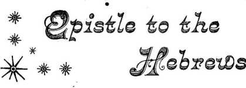
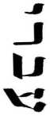
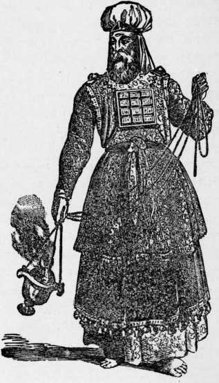
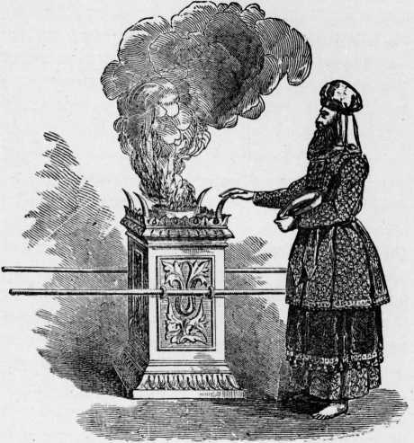
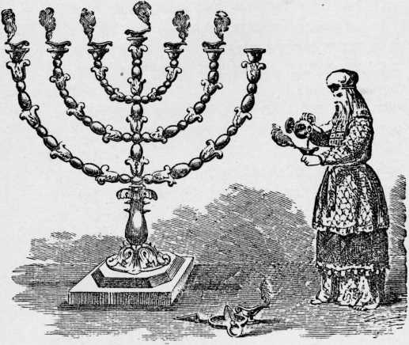
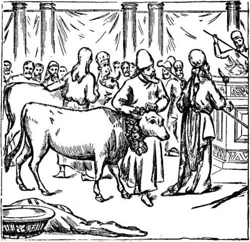
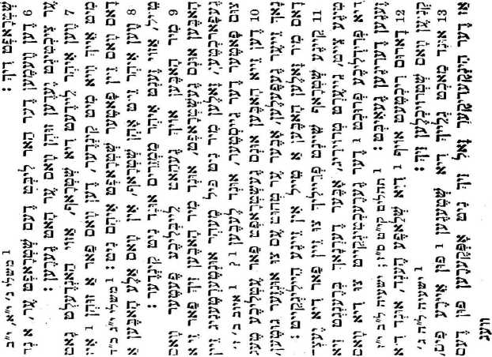
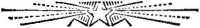

No. 56—Epistle to the Hebrews (Yiddish)
^ibl^tudgnts' r^cT®
BY ST. PAUL
ALSO-
LEVITICUS 16:1-34 AND ISAIAH 52:13 TO 53:8
IN THE
YIDDISH HEBREW LANGUAGE
WATCH TOWER BIBLE AND TRACT SOCIETY BIBLE HOUSE ALLEGHENY, PA., U. S A.
No. 56.—January, i$d2.
fiNTSRED AS SECOND CLASS MAIL MATTER AT THE POSTOFFICE, ALLEGHENY, pA.
SAMPLE TRACTS FREE ! SUBSCRIPTION PRICE, SIX CENTS (3d.) PER YEAR—48 PAGES
OLD THEOLOGY QUflRT’IiY
- FOR THE —
PROMOTION OF CHRISTIAN KNOWLEDGE;
PUBLISHED BY THE
“ BIBLE HOUSE, ALLEGHENY, PA., U. S. A.
BRITISH BRANCH, I3I GIPSY LANE, FOREST GATE, LONDON E., ENGLAND
NO. 2. CALAMITIES—WHY GOD PERMITS THEM.
NO. 3. PROTESTANTS, AWAKE !
NO. 7. THE WONDERFUL STORY, 32 pp.
NO. 12. WHY EVIL WAS PERMITTED.
NO. 21. DO YOU KNOW?
NO. 37. HOW READEST THOU ?
NO. 38. HOPE OF IMMORTALITY.
NO. 40. WHAT IS THE SOUL?
NO. 41. MUST WE ABANDON HOPE OF A GOLDEN AGE?
NO. 42. CROSSES TRUE AND FALSE.
NO. 44. GATHERING THE LORD’S JEWELS.
NO. 49. WHICH IS THE TRUE GOSPEL?
NO. 52. OUR LORD’S RETURN.
NO. 53. THE WAGES OF SIN.
NO. 54. A DARK CLOUD AND ITS SILVER LINING.
Nos. 21, 28, 40 and 53 can be had in Swedish.
Nos. 21, 27 and 53 can be had in Dano-Norwegian.
Nos. 3, 12, 21, 22, 28, 38, 40, 49 and 53 can be had in German.
. Nos. 21 and 22 can be had in French.
Extra copies of the above tracts will be supplied free, on application, to subscribers; or a single sample to any one. Thus many may be coworkers with us and with Godin scattering the truth—“the hail.”—Isa. 28 : 17. Hundreds of thousands are being circulated thus, the funds being supplied by voluntary contributions from those whose hearts and heads have been refreshed by these “glad tidings of great joy which shall be unto all people.”
BOOKLETS
the wonderful story, “the old, old story.” Illustrated.—60 pp.
WHAT SAY THE scriptures ABOUT hell?—88 pages. Also in German.
what say the scriptures about spiritism?—128 pages. Also in German. tabernacle shadows of bettrr sacrifices. Ill.—130 pp. Also in German.
Extra Copies of the above booklets are supplied to subscribers at loc ($d.) each, or 50c (3/6) per dozen: those below at 5c (2jd.) each, 25c (//?) per dozen.
the bible vs. the evolution theory. 48 pp. Also in German.
the parousia of our lord. 78 pp. Also in Swedish.
epistle to the Hebrew’s Illustrated.—64 pp. In Yiddish, only.
German Watch Tower & Old Theology Quarterly—Translations.
— QUARTERLY FOR ONE YEAR, 25 CENTS. —
We can supply copies of the first 19 issues at the rate of ig copies for 25 cents. Sample copies for free circulation, gratis, postpaid.
THE EPISTLE TO THE HEBREWS.
This little booklet is prepared especially for Hebrews. The first two articles are brief extracts from the sacred writings of Leviticus and Isaiah— portions well known to all Jews. These are followed by the Epistle to the Hebrews, written by one of the ablest and best educated of the Hebrew race, once known as Saul of Tarsus. It manifests a very*extensive knowledge of the various features of the Jewish Law pertaining to the sacrifices of the Atonement Day, etc.
The booklet is sent forth with the thought and the prayer that it may prove of interest and profit to some of our Hebrew neighbors. We supply it to our readers, one copy each, as a number of the “Old Theology Quarterly,” without extra charge; additional copieswill be sold at 5c. (aid.) each, 25c. (z/j) Per dozen. A sample copy will be sent free to any Jewish friends requesting it and promising to read it carefully and prayerfully.
All who may read this pamphlet with interest should, if able to read English or German, write us for another booklet which we publish, viz., “Tabernacle Shadows of Better Sacrifices,” 10c. (jd.) each, 50c. Q>15) per dozen.
It is presumed that those of our subscribers who have requested this publication desire it for loaning to their Hebrew neighbors, and that they will make faithful use of the means thus put into their hands.
WATCH TOWER BIBLE AND TRACT SOCIETY, BIBLE HOUSE, ARCH ST., ALLEGHENY, PA., U. S. A.
BRITISH BRANCH, GIPSY LANE, FOREST GATE, LONDON,
n
XH pS B’lB DJ?n T]X2 H^C 1Y tSjpj/J lOXB I2XJ IpX 1 ojny;^ 7? paxp x"j. pii ,pn« pa p’t xtp bxj npx : p?;ixptp7J pp; k«i i?» exj ike 2 ijryn? pi pD8 w T"n zH$b w a;xp; exp a^pT^’C X’i px a"Y j^x pp-p B’J 5xj njj ;x ^pyiiya'x ajn ins ^xnnxa ajn pa rpiirx bxT njj ?X zpppxp DJ?7 piX VX DXTI (fQEp) OH IJT’WS q-p byii -px ]n -pza-ixtop b-j prix Lxj B'p : rpi-a dj?i rj’ix pp x;i 3 px a’p zfi.x B’,prS”n xn. px p;pip
P'K iY ijjtp p'B i^x ziyeaxvi p's w iK'ct?
zipy>“.?.,ix 1^. Sxj a’lnvr?; x'-inpx z]jptpxj 7? ptt'xii Sxt ny. nrx zi^7”5p jrj'b’ n x-n p,j?t x’\i.
: PT 5p-:« x M iJJ iTx p’t lypxYi a-p
1JJ ?«1tp. lyij’p X’l pa 3?1.?1,©3?J N’l pa IpX 5 ,nj?££Nnpj p’g “I’B 7]j?5ipj?3-]j?p? K”P? jyj^ pnx ipx :-ij7§mpri3 p« t§ -.yi’p p*x ipx c dxii ,nj7§§sip! oyj pa lytptp ayi |y;nyjy; Lxj T? ,yyi pa p’i igao bxj ipx /Di’X ixa r.x jyi^y?. 5>xj njj ipx :ipty;pin pt pyprn pa irx 7 nxeiy jy^yotJi X”t ^xt -iy ipx z^pya X’-py x’l x’i pa zta'pyxyi oyj pa i*e iyi K”3 /Ex$ *ij?3’K pzapxri ‘jxt pnx ijix : jpSpxpyg <s □tn ipx 'toxj iv Snu p’« '-jl?^py^ x”py x 1. ]y;njyj ^>xt pps i^x J^ixn? iy 3?i3?i;t< 0 Dp’K pw p^Nejt; T’S ‘pc "IJp DNTI Sy[7J?3 DXT : nyaaKnpt p’« poxn djj 5xt ?jf npx /Etc w «p x ijtjxgjc. rx Snw ijn exit ^3?i?3?3 dxt npx ju nxa J’ljzay^ p'njni tabjwj^ Lxt Atxtv w opx |J?gT!ivpJ?iii< opij /Op’x a’p p’j. w ngaa #ax^ 5xj pn.s npx tp’i.x n|-i.i3 ipn ps ^txty w 11 rx dxti 3j;a$xnp: Djri pa njptpt? 0577 ]3C.n3?;jC. |3?jn)EJ?P’.t. pa P’I 1830 5xj npx /DP’X 17 poa>’t? 11?. ipx 'iptypr.i p’i pa npx :arrx iy rx oxr nyggxipt Djn pa iipt?:? ayn ycic.l?Tp pa ^a ]xa? xn pyayj Sxr ny. npx 12 nxa pa /(H3!i?) S-iE^iy§gx oyj pa /]y^p ^1x11 pa pnn”p pa Sia •cyn yr’t npx 42tc djj ‘’xt ny. npx /|j?D’ffit|tyj pi /fETiy; i?i;j?p;'p Sxt -iy ipx : j?ixrpxB ayj pa J’P’ppx p;p‘>?3 13, npx /Oxj ixa njpa dj?i pix piyirpn dxt y; p rna’ cx-j jypyiyp piyr-ynpa jyp.xii
ppi
bxt ‘ijj /(pyty;) D>n ‘I'W rx cxri oiS? djh. pa jypy; 4>xr ny npx : jyapxpiz* tr? 14 p'l cp py;;ynatp 5xr ny npx znyxtp ny} Ps nxa npx zC-j. n^p px ‘"Qe3 djh epix nyo.pa cyj pa Sxp jpsjrj nnaa DJ?1
oxn ]yp?y# Sx; ny npx : nypra p’j. B'p toip? 15 .,p5x? cyp nxa rx Dxii nyeaxn/i oyj pa Sypya cyp pa J’^rx o^a p1’ "’X “1?t<
-p^a 0^3 py cp pyaxp 5xj ny ipx zj;xpnxa oyn pa o^a oyp cpopxoy; oxn ny xyi yix nnaa oyj rpix jy^ynatp ‘jxt ny ipx z^/pty «p x p’l igqp; Sx? iy. npix : nnas oyp ixs npx 16 pa ;yp’'p.rr''ppix xn jy^yii pa x’n
"pya'x yry jyjyii pa npx /Sxptp’ nyp.pp xn. iy bxt ’iix npx /-ip? yp’*t y$>x tj zjy;paypo □xri /^Spxnya nyp pa ta'pyxy; oyj, w ]y;xp : yp^ppynoix yr’? ]ytjppy /X"? wp tori’ll pa to^yyy; cyp. px p\t to'j Sxj B»;yp ppp ipx. 17 p'l w i53p p?mp oyn ny jyn zopbpxtpyg xn. ny npx .ppp'rix ayii ny rp zto"pr5”p X’n px p\i ]y?yii p2 3px ;y;yiitoyri pa P’J. ispp ^xj pa j.’iSpxtpy^ yy;xo xn. nxa npx znjpyjp'.n dxiti npip oyj w p'oo'inx Sxt ny npx : ‘rxntri is /□n’X iyjyii py neap 5xj ny npx ,toxa nxa rx ,nyptp oyp ]ia toiSa oyp pa jypy; 5>xj ny npx oy 7Xj ny npx zSypya oyn pa to’iSp nyj pa npx :mnx Dorn ngm oyp pa nyopyn x'n epix pnp
cyn pa op’x fpix ]y;?y;§^ ^xj ny npx 19 co
lb
bri'N ^>nj iy npN jy*y’j j”j c*a H’l jy;yii 1 a /JPy^’n op’j< { nj ty tin , y;'P"3 ny jyiiiyN ibNjjt?’ ipirp nh jw jyp"’pr;”ipiiN 20 o"pyi?”n N’i jy;yp j”;_ w laao jynyn?’iN tayii »ngja oyi i^in jp%Nj-jyg N-n pa ta'pyyyj oy-j i;-n : ‘wpys cN-i jy;ny:yjz iy. lkj * ’«
oyj tpiN ijiyn N’yjy yp'j jyy5 Snj jti;n ijin 21 Snt iy npiN /5ypy3 jy^nysy^ oyj pc «]?Np JIB jypnpD’B N’l yf?N DH'N H?3’N J”J HTFP jyjpaynpiyN yy’j j/5n tin Tyj.'p nh Dpi 'p’iN pn:a N”t lnj ijj i;in ,-ip; yy j yj>N jib zjyiytvpjniN djj lnj ny nyN ^yjjya on pc 'p.Nj? JN z'NO jye^lonPnNB P'N pc T.Nri nh ypn y.N .yJNntp lnj fyoya dnt ijhn : 'py.N nj-p nj?7 22 ,-;n5 jyooyi oyyN j-n zjygNripp p yyj y^N y? : -c p 3yj j’N Lyj;y3 dnt jyyi^pyiiN 5nj ny -i;in
Nn pa a';yyyj oyn j’N jypip LNjjnn« npN 23 .f^iP N’l jyrj’yp’iN Snj ijj npN ,jpSps;
n -i j n jyp’ipya rN ny jyii pyy’^pyxiN bnh 3y dnti iy npN : ^piNn jyj.NS N”: Snj njj. npN -p”p.yi?’'n 24 /□■jn jyrb”,i Djn. j’N nypNYi trp 3”5 p'j. jy^NT, ‘jnj 5 nj 3y ipN /iyi”^p y;”j jyy^pjN 5nj 3y i;in /-.y^NijNi? yp’t jycNB 5nj iyz ipN /;'>;.D’rN “7NJ 3yz TIN /p'jNB Dyi pB lygCNnjlNn? ONT IpN : pjN? oyi jy;yi.j jib tin jyayiTyp’i pc j”j '.B3p jySBpyi ny Pnj ly^pNnyt oyi jib ay? dnt i;in 25 tsp'^y.jpyiiN ONin dnti nyi npN : rqjp oyi yiN 26 ipN ziyj”J?p yj”j jytfNTi 5nj Sjnjij iy ^pyo dnt rjxriyy ayx zaypxTi ap s"5 py, jy^XTi bxj ay □yy, a?W zp'?X ayjxb D'n i'K ay 5xj 27 ayy ps"byjp.ys cxa apx zay^xap: ayy ps ayp?> J^xry; axsasy; rx a^ibs ayy dxti zaypgxarj -paax ay, 5xj '□■"prb"-} x--[ px py n* assp oy ]>5«J X'y i;w 'iyp.x5 ojnps rrypax \ywyas tr bs ayy by? ayy. zay/'g B'p ]y;yasayg bx: X”i ajyaspyg Dxn aya apx : ap‘p ayy ajw 28 a p s"5 py pyy'xri bx: ayix zaya."bj? ypy jyt?XTi ayjxb ayy px jypip ay. bx: TjXjayy ayix zaypxy Dyps"x p-x iy Tj"» w j"; bx; Dy apx : j"ax 29 jypj.ay? ojn px ztHia lyaaa oya px py:yj ziy^yv’ i?7 s jyzJ itn b5kj nn QH w aya zpnp cp an’x u5xt a"3")x X"5byp’p i;hk apixii dxti ayapya? aya. apx ay;yaaaya;"x ay ayii axp ]y;axa aya. px 5"p : 7’x jy^'iy; 30 a;x? ip'X ?x zjyry’a w ?]"x zyx «yix py asap rx oxa : axj axe ay: ya"x y5x ps py p’a 31 pyr;?s b5nj ap’x ayx zT]"x iy apnia ps n;e» p’x :pypy; oyy3"s P'X rx py z]y5yy: ya"« zEp^wyj. pp'x pxp jyp dxti pas ayy ayx 32 yj ’i p^say-j pxh jyp dxti ayx zpy assp 5xj ay ayx zaypx? py pxp^jx ps p'x py r; a;xn yrb"y xn. zayypSp yjyyp x>a iyy,"5pjx bxr p; -''"n oya axs py agsp bs; ay ayx : ayyy^p 33 pi a yyyp.Dya axsayix z(t?-pn anpp) D’lnprb’yi »py aesp ay bxj Dy-j ,jpbpx;ay§ x'y
pxny yr x^ x a in? i;w /P'^s x*a «y:x ayx
‘ ps '
p’l 5x? Djzrn. n;ix : pi issp ip 5xj p5xs Dpi. ps 34 1X0 pn 1Y 1000 ppjpj DPpZT'X p"X « -]"X « Sxo p'x ip? pyi ”5x 5xnt?’ ipp.pp X'i ox- tax.) xni 7’^ P* W, tsxn ip. irx rrx; D'X'
:rwn w ]P^X2pj
•3"3 pa Spo Eft T'2-3"* p1D5 ,2"3 tytS'SNp
EP'rnn ■’X- e?i0P rt? i ^hpi 13
inpt BP!) ip. ipx .jnpp pmnppi ipx /]jnjrn in ip^’x ■ji ]P?xn p^’s X’p iu$ :pi pin 14 ps ]pspxiips jppp^x p'i rx iTN tappiixipys : ipi.pp~iP^"’? ps t2$Ketpp; ppi ipx ,z*jpo x □n'X ipa'x ,D’U pS’D jp^p^tppa ip tapp i:x 15 pixn ,]po‘rxrny ip^'ia vpi'x d'?5o xn ;p^ni jp^yp e o'; x";. w rx exp oxi znpnpj. t20 p??xp X”i oxi; oxi npx ,;pn; j x-?
: ]p^;xitpp3 X’\t jpppp .JJ 5pt2’£Xp ■
it ipx ?jpipn ipjpx w O5'i5;p; i?1.) 1
? ]P1X\W. ti|?P^?t?;p. OK^ ps OpIX Ipl VX ipf’pp fjppniv jjp $ xiti Dn'^ixeiP^xjp22’-,XT’^ ippixp 2
1J1X '
axn njj ,pjx5 ippinp x pa 5y?nixi) x kt npx to ■jni npx ,B'-nj’T p'p npx a5xaB7J. p'p a'j ixnxnp p’p a’j njj rx ’i?x jyppjjx ap’X jj^jnj
rK "W :i>®o,!?j 0,TX ]X JJZ^XJ TO 3 pa jxo x ,;yt£?yp pa jyp'ppyg -pix apy^pya to npx ,a"np;x"ij? a’p t2;j?jjj?a npx jxa”ii i x "ij?. zjyfixapyg arrx pa O'Og nyjpx ;pgxn a; otx prpxn to npx apy^-jyg iyprnyj yyzjJix ]y|xnpy; axn njj -ipxinxg :apxyj 4 ynjnpx |jnx^ T1 *T‘K ■’?*’ 'W’^p^p □5x ]j?p5x.np; np’x jyaxri to -ipax ,jxa”i.i npx jjzix^yj ,ax; pa aJxSgy; rx dxti ijz^x p;;yii ’’K Jarr’gjj 5
l^'XTip; iJZP’Wphn T'X 1J?. Hpt VTy-JJlX tyipx pa f]xnpt|’ xq ,]j?9',’p^apj7^;px pnnpx p/^'S P?"I T)n ^px zDp’S *pix rx P7T1? j/^x to rprnxiiy^ ^p ]j?#j g axn Bpj/p nyp^p’X ,s]xb> xt jpnxiiyi ayx^xa rj'ix axn axj njzax ,:ijt p’j. n' a'lnpjjyj Tl :^x opx pa v; x n. ipepnp oix^y; aiyx px".yi.)p; 1’x njj ipx z^;.pxpvyj. t’x 13; 7 ,5’io p’j. aaxpjrjg’ix 07 njj axn pxn ,app’ay5 ,p;paj?$ ais y5jrpj?5x xni ppxi’y;. apxnpjz; rx njj ’Itx ,nj?n>?^ ttx nxa Bia:? rx t]xp x xn.i npx “'Ji. rx ik : 5’10 p’i a;xpj;;B’ix a’; njj axn 8 ,ap’nyA npx o’jwgyj a;p. pa pqxrr*^ p>?pu ny. ppxii ,nn ]”i i';5'’XP>’~P'ix 5^ njni njzax xn. pa n;x5 aj?n pa |ynx',ij?;. ]yp'3tstyj§x rx prnpaj?5
33
,p5x; pp is y p-aync-pa x x n p;.pi ,j?pp3P^ p?yp^. axn 1*. i;ix : r-xryj □jx^gy; njz tx 9 px jzd n xn. u'E i; x ,nsp pt Dp^n xn. ta’D Dpapj^ix p’p toxn ^ixiia^x zsa’ita p't D'ntpXB pp pippo. O'? t’X djj ipix prtpjta to xiij^ d,tx taxn tax; njrax : b’lD pn px 10 xn pii ,D?j?pjza p;xnp d.tsj toxn njj ,pjp:;tPjj njj tapi /Dtfx |jpp x d5x titej p'i p$xn tappjrn ? I?ny;p3 dx-j npix JjxS n^x pz?xt p.njtt p‘ P.i ps : npn pp\t px tayn toxa n
ny. topi topnya T]’t toxn e?§o p\t. dxi; opj c'Pt?ppp. y?pj. ipn ;P^PJ V1* P^l ugyny;. jz^b topjzop ijzepjz^a. P'B P37. Bp.) cr.x-j : p^o'i pp’t paxnp topi ijj 5pi /]y?xc 12
xn to-p p5n x p^jza. cn'X iy -px Spii ,:r t p^’pp’ix nj? topi pppxptp xn to'p noix
DIS’ ntOEp ypt PDXJPOD’IX tOXi? 1JJ ‘z’P '■■ppx xn ej’p p'jkip; i’jj ijj ,ypB pa V! xn. p;xnppa toxin -p n;ix npppnp : xn. ixd 0x7 njj -pix
X 5>i?B’£Xp
tpx npx Lxp Sy? p,''^® ex.? own oxj x ^oxm; xn TjTn max xn « taynjc. ito’ix x’^iy^a p’l pin cy-ji; cpx *v yn p« taxn
•13"’ ,n';’ 3’3332 ;n '1 3"’ 333B31 :]niT
idj^x nya'x ehr p« dSx e:jxbj;j. :axn-p. paSy.) 2 : E?X£J^ p^'jrg N’l T1X BK!7 "'J? T'n "1?x .'ij"3;'n '3 n’^nn1
npx /E”pD’5nyi lypi pa p'g> ij?-j ixi.i lysSyi 3 -p. iJ?. 1-3N /(H’lH) -jxettiyg pi pa ta^xa^j?; xn. ipx ,ia£xpp ypi pa sapxp ox*] r|pn dj^x b^xh jpj’rn. xn. tapxaj?; ed^S*? p; pin taxn ny. obx -ijq. iv tayjzpj hjztjx pt ij?. t:xn j?nj?tpx pa : 17'tj nj?i. p« e^ripT; ijrj pa iy^PJ?T ,x ’»p fibrin1
N'lj i>d*;3 5j/’a ms rx npx 4
Sj7’£ P'B tar’SOT EK? DN-J XJ /D'px'jD X’T : X”i pa pjiijxj
$xp x n^. t2xq Q'px^n xn pa pnsp 5
T7 px 3Xn ypni pp tap? xn ,to;xjy;
x p‘t op'x n* px zbxpp’s pc n;ix 1 ? pnxp b"b;'i'3 t^nn1 ?pp;2sp’ii'p wpjnpjjnjix nyax?
.3'’’ '1 3 5xib» 2 ;t"3 1‘3 n;ix ■
jyty^xpypc^Ty jyj aajya? ijnv|.i ph) s 6 ,cxa pa c'pxbp yj?x ,ay aax; p'ax ta^y? .va px ,'t t"x rrSnn1 : ^yp'p CH'X ?¥ ?pt x?
ypi apxa ay ,ay taaxj cpx^a xn. ;ypr apix 7
: i]yijx5?a;pg ay pa yp’i aj x ayi^pip. n’pxSta ,a i"p
,t2XJ X b’ltatt* pn /(ay E3XJ) pl? DJH 1J?3^ 8 rx taiynxaa ps ay^sy^p p’s p'^'x nrx /» '1 n"a a’bnn1 : ^"aapyp p’l ps ayESyyp Dxa ,Diytn aya taqxn apx /tai’pptapyay; a,!? tapxnxn 9 ^’xayy'aa B'o taa^xtya. taxa pn ,taxa X/rpa taxn □nxn .« ,H"& rt’ytt” ;'t ,n"n B'Snn1 ^yirn? y?’1 ^X npy xn a^xe^ix d'x apxp ;ixn x ,x?t npx 10 ya;n ps yjjiyii x’p iyjyj ftyo'n n'i vn '“y^p^yi n"3 a"p ;'u"S B’^nn1 : ^yn
tapyii XH aypx /jyjyi.) ^yT^iys jy^yi) u la^x T^p ps X’?) jy^yii y^x x y npx i/jya’^a ,i i"h n’ya*’ 1 : jyayii
/(lyjjyiys k"j. spy!) Lyp^p ps x,i.i ipn 12 tarp xn ayax /]ynyr D'jyipypy? ]y^y?.) K”! ipx
:p’^y§ ta'a jy^yr pax; ypn ipx yppSypy-j. 5xpx ay taxia cpx1?® X’a pa yp^yi) w apx 13 Syij px ’’3 iyppy; p'Q w ti ^yj /^x?y^ .« v/p n^nn1 ? p;xp-D?B yp a paxn app ya;n tajj’tby^D'w ,ayiji?ra riy;ny$ y5x tap x'7 |y;yj 14
? 2E,,|pyi?y? x'a ]yat?>T. iy^yii d^1 x'i /Wiy?
H"’ K"2 ;'»',1'6 ; a"2 '2 'M 2"^> n’B’«a2a
Diaxa
3 tya'axp
K’1 W n^ ^Xl TO |JtpO DnXI X
td dx-j ,Bny$j^ jjtpxn i’P j;p'?yi.) jysxt : jyh'xs?*? B’J rj-pn tajry;a nxr> oyo'pjrii n-ixri oxi jjrn ]jq 2 *1^3'X jnjTW- *^w 43^1^. E?3?§ ’’K /D'P^B jyi^'xnnjj tax; n,,py;§^nj;yi) W 1 Jptay;t? n'6 i"b -is-ma 1 : i3i? jyppyiy; p-x
tB’J 1'0 '1!l* K'1-1 3
? ta^pr^j i(njnttp) yp’w xtx ^ix jyaya. apoox ,ixn ojn. nin “W3 a,,i3?$ r* Dt*v ox'll xn x"3 pnxTjjta taptajzi^j^ opx w rx »»» no rvy»’1 5 E’Wny; ojj pz^xn
jy3"X to'p top’yys x ’t rpix 71X toxn taxa jjzr 4 1 tax; n;ix ,nni3^ x”‘?-)j?^a i?ix ijznjixij taix '« .3”b .tub”1 '• I”! ;xa tti-jipo nr Dyjta^ej^o-ix
ta?xoj?; j’jy^iyopx o*3x;p iy ta’a taxn 3$ 5
: ]HJn jqjn.ax xr
/taaxj vix to;x p’x >-] ix ta^’yj^ W'X nj?3x 6 dh'X ;x top':xj xn oxi ij?; rx oxii 1 tat^xj xn dxti x pa j^t ijzi ipx ? jvpayn 'i 'n a^nn 1 ? ;y3i?j?3 orrx
xr pa tapxojrj "lyar-pa Sjzprx oirx taox; xn 7 naix yyjf ta'o oa’rpjra. on’X tapx.n i;ix /D’ox'tp xn ij?3 x tayyp^ on’X tapxn ipx /ta”p3’5Ty,n 'i -n n^nn1 ' 1 n^n y:?n ps □ tt*”O
ttoxpya. ^^".j^px tapxq xn 8
C'S ' ■ : ' pp’x iy Dpjpx exh ip dxti Djn px jpi i ,D’a B’2 tjxt p-p ip exh ’i?x ,apxcp^ I’lp^ipBjix /D,i’x w I'lpaiptjpx E’l rx dxyi jpjx^p; ipa’X □7’X W ?’X DP^X 'X £2’2 T]X2 1’0 jpipj ESP’ ip3X
'»'n ti’5nn 1 ? 2’?p$ipEpx
ip^iPTJ fyD’38 vx dxii vr«P’ ?x yiiy\ i’o ipax 9 rx ,e’1D dpi pa ]P"J”5 xh p-jn E’ox^o x’i pa ’■pn uxj ip. rx /E”p.3,!?ipn "ipx Pinp. B’P B2’’ippi
: p“?X 1XB £2’ .0 Dpi IP^HP? £2X3 pB 1X33 ipi pa rx op^x dxti d-’x is eqxbp; exh op jp-j io exh ip. jpii /Di'X “1'1 rx dj^x npx taypn IS? fx ;E”P3’i?np1n « nyipp y^£> JWJP13 P^XTip; "Ijp'.’. pS f2’-!5 DJT1 p?3X0 f^X3 1 ]jn.”S Tfpl UXJ
'B j"d 1 : £2'’pP‘'PJ
~yj iyijpi oxr X’l Ipx E3’S”pl DXYI 1J?7 ]J?1 11 B’3 71 njj am. ,dj?j.”x ps j?^>x Ei’S”ii
£ iyTi.3 lap’ll X”j. 5xj njj qy pzpxi p’i ^’’yij? Spr -’x 1 aixj np. |pii 12 fyl) Pp.p'PPJ. iPT ps jyp’p nyi px ,npi’i3 pp’Q j«3 3„3 a,5nni : •y5'1S ?pi tj’x
/piypinyB dh’x px Tpp Spr rpx i,iypii ipx 13 CX1T1 Tpipp X’l Ipx 7’X p? XI /EX 2,ipi’r I^K n"< 'H rvyB” s ;j'a n” a^nn 1 : Jpapipi 1’E Exn EX2
npx tp ’Ss px 5vex ]3xh npiJ’p x’l 5”r brn; 14 1JJ £X X’\f px JPE12PA 5”EX -]’1X ip. EX" ’IX E15a e;xe ex cxr epi. 1 ppnpptpn' E’W epi rppn “ixt 'n WJ72” 1 : JI35P ipi T’i< 0x7 E’1B DP7 np$’$
121X i"i j»< yann
ny-j rpn axri X’i jlpPSya ">5J '$ i?n is px ]yay5 ny.”i ;y;yi ana ayj i pa apna '3 'X 'J H’-Ot1 : ESN^ejJL'i?
pa naxj xn. jyany; Ti £T’iN a’i axn ij?. ]n w ay-j -y^uy^ rpj qnx axn njj apy/’j ^n’ax^a xn : annax pa ]yi?x?
w P’i T'^ oy^i? px aenxny; -iyz axn anxn 17 n^x ny^yny.naynxa x p'i 5xj ny *x ziynn.? ypn xn jyayjnxa 5xt ny. <axj nx© 5ni pa nynayi x 3'6 N'6 H'BI’ : '» n"J rt’VB”1 5 1 pS'iS DVT pa |J?75'5
’’i? 7y. iJii.) /p^yj vpa5v.t Ex? 7j£ jin. is p'S^n w 7;xa^B'i? 7j?. rx -i?x ^yjx^j?;. a?'7B a*’—- j"j h’j?b” 1 :1 a? iaj?ri oxri xn
Sjza’axp
•y^n-p nyi pa o-nan ,7yyia y^’,3 ,mnxn x -ipx (n-ba>j Syapax ay-j. tjx-j ayaaxnaya jaitmya
: n^an /D-iyarypya -yuix pa Sni pa □,tx axn dxti a>*7 r» x^nayi ixti nyaSyi) 2 jyyjxj p'i ]'i? 7t<ri m^a rp'.x x’ii nix /apxiay; 't 3'-’133B3 1 : Pin
zHira d ;x apyi) a^pa^pyn ynypynj rx -iy. ;y^ 3 npya axn 1 ajpay^ r.n oxn axn dxti nj?T xni ’i?x a"’ '1 n’33r 1 : ;nn ayn ps naa
-iyi 7yax ,t^;ya x pa aypiay; rx rm ay^y; ;y-j. 4 '3 i"b “’psr’1 :1 axi rx aynayi ay^x axn axri
zP n ;yy;xi p’j. px x’pay; Spxr nxr n^a npx 5 xm
dxti t>b nnjz ;x 7xa i /-'P7-‘P x xni
<0 n"’ D’la-i i : pn71) 07773 ■..‘jxtya jy3x.n
p.’. nya'X in’ll Dpx rx dxti 777 -ij^x 6 ]70px7 to j71) ,i'in p’l J737’ to npx ,rin j73”» 3j13y-.,xn 777 pa 3’ 5 077. 7px ,77037 xn 0075 : s] □ my ra jjt oj”n i ,ojxt etyp7 nn 777 xti mnxT 7 j.T'sa’TnnS ;<3 j»3 s'jxiae’.i :2J7^7iJ p‘,p p\t o^Ti np’x □77 px xni nyy^n 777/x o’j 07^7x7773 8
: 7370 777. pX Jpi’7? pS JXO DJH. |'X X’ll <?'7p njix ,“3117x5 ipp ,72x7 i77yp^. yT’x pyj 9 rs-772 piJW ‘Ws,7 '1?x <12? 1§y;
'□ zt n"x a^nn 1 • 1 npx;
□□7^4*73 ;7p7 0'0 oj’7p7J 70 rpx 3X,n mnx-j io <p7X.n 77p'j px |7tx X’\t ,0}x?73 axn npx
,n"!t a’^nn J??’® t?'? P^^xn X”? npx
]7^xj X”J. ,]7XV p Q i’X i7;xptp72 T]-X 2X1 TX 11
n«x a’^nn 1 = 1 i^^’p ^Hi7 7p o m;
pa □7p’p px m? Lxj 07. :x <777’72 ,17 o:7j 12 o5xj 7,7’x /'7S"^P’ix pa p7X7 r’3 p'x 7'x 'n-3'xnw'i:ioxa ]7pn.737^ QH Ps 1
<7]’7^7O ]7n77?x 077 •'7J”X op7nxii 17777.3x1 13 O'j Px: ip’x pa i73,'p ix <o?'n op”i7 07 j;x5 nix 777 pa jpn’^nxa x’7 qpn j7i)7ii 07127x777?
: 77pi
17^X7 to |7i] /n’tJip px “ro X p7?xn 7>p 577 14 : 7D my i’2 jinpa 77jpx jib 3,-7,X PH “9^5
Sip j”i oSt tn jjni ya2"jj vn djj Sti is J‘N N’T? TJZy'TJZT JZT’N 0‘? OJZ^TNITTNS ^TJZIT IS 'n ,'i n"2 tj’Snn 1 • 2’Tp DJH
-]NT NT iJ7$Nn Q"}y^JJ7^ iJ^N.T J7;.’2’'N jJHl 1 jJH 16 jju ni;; d-,tn p;n dnti >'Ss 0’2 tj;;n /Orn.pjzj 'n-'a i” 13103 1 : nt?;o “Tn □ Ti'p ji:
J'¥iy§ tarnpj/J 7? TJJ tSK^i B’P "’V3N 17 /02'7’IJ^ P3NFI DN11 N'T 0'0 0’2 DJJ INTI ? TN’ TH ]’N JJ^NgJ^ ]J72JJ. 1 TJ73"S J?}”I DNT! N'T B”3 1"' 13103 1 ?
0'2 ]J?!?NJ N”I ]JZTNWJ?} TJJ ONI? W TjlN IS
DNTI N'T W 12’2 DJJ INTI ' 1 ? jJZ>;ip JZIJ’IT J?i”I W N"’ n"x D’Snn1 ? D^j^t^Tjn’Ti [>'DNIT
J”TN 0’2 jnN.T N"I IN 1 TO ]j?rjyj TN 19
n"’ n»i' o^.in 1 J 0'2 |J73n,t n"j. b”ii jyipip
T fyo'-Np -j
?’N niroan p’N |j?i) ,p;gns<s T? tonS ditnt n y;yoip ]"TN ypiT 37/'? |'N ]J^NJ TO D^N
! .JZDTTT. 0'2 5nt D21N p£) TJ72”p ONT
N’ll TN u2Niy'2. HTIO'D N'T t’N D2'N W '[J7T 2 0'2 7'N ONT O^Nll J70;j?^NTJ72 DNT TJZDN ,y'N 0'0 02 2 'NTJ75 0'2 7? ONH DJZ S”TI ^J^NiTJ^.
! Opj^n DJJ iy3Npi DN11 N’T W |J?3’62 rpT y;T i'X i'TN jyoip |373’1^ DNTI TO ]J?7 3 iJZTNT^JZrf 2NH 7|’N NT 1 ,0^NJ3^ ONT TJJ NT TN ]”TN J77T1T J72”O W 0'2 ]37^>NJ N”J. DNT zjTNy j"Q J'N jyoip - ....
yyy jxa o^ayya jyyxri ypyyi; 8n yy’axn z]ymp m"' n"s B'^nn1 : a^yii iyy O,np’y?
djh r$ ctk iy m 4
]ytoypy ayy aynyp. 2x7 axo ypix i,oxa jy^ypiy '2 '2 WTO 1 * mn y?’.l 1^8 pS J8D
ypa is o'; |y^x? x’y 1 oxy znyyy? nt yoix 5 x"» ri's a^nn1 : pi?ip prix ygn
8? jyS^J yp.'PX ?8 2?”53 Dy 5”11 DllXy 6 pany chs rx oy yp*?yii ,xn yyax z]yijip pnx x’y nil |yppxoyp. pp.x a’p ]y;yj pyyxyyo apxtyppx
: apPoyp. ay jyaxn yy jyn ,top'2t?>yp oxa jyoyyox p’x ny axn ’nx 7 oy xii a"y y;.;xS x;x T]xo ,ao-’n ,nn T]pn aox? py a'rri iiyx jyy ,ao"n |y;xvy3 ^oxjyo. pie* vx : iynyn ypx a’0 aytopxrnxa jynyr; is 5ip 2*7x1; ,;y3y;yo. yirn x'y 0*7x1; yitt*irp jyii jyy 8 : oxa lyyyjox p'« ps aynyo aso tjxt ny □yy hxd n;e* x jyD’bayo-iya'x yxo rx onxy 9
: axo ps p*7xs pyrjipyo pnx ynn ypy ]’x vx oxi; iyy jyy 10 pa axo x’li ’1!X ,yp'yi; yo y ps 71X ayrjn iyy ; j?r\: is pyx ynn iypy is ly^’x yy -npxS onxy 11 ]yp*7yj oyy yxo 1 jy^xa a’o 5xj iyp p oXy ,]yaip x»i -"s aynn1 : a"p'a'pp x nyppytx pa ’y?”^
y;ix O’-ypy^ rx axo pa ayxi; oxy pyy 12 ’2$ 8 8’i? yy.v~xiy i.ix ,op|yyp
xitu tla gxLXuL&i!' th/, lu Si; d i Sui xuta z ttl^clu Lill cw^u.u iixd.il d.a Lia xtettuaieL.il
x.tu dsi^xia-xSGlu gxu u.x i.eL.ll: iuciuK n' n»‘ Ixtll Si '1U IXC, dL'i-.C Uul fxdl! xi,0 dsSul-XS'llU' Gtl die^il!' x.i gxu dlt^ll x..er.l.i:6.1ii!c31 x.l rxdla
x Lil Xutfydlu "Lil cute, tixa Sui tlctdll clttxCll
L! dxGvdle, u
till cw. cluxlGl! L'ui,lj:
UXLtill' XttU cw. ixtjll tlddll tcxu Xt L1U XuuO ttxL.l!..ej'tL'4' Lxa cw. ix^ll cxLau'lL.iuC'ilua iu_ 9T Lxuta ^xd.u xtSitlall d.a x g.lLi.cluttr xta i ji_: t iflluu c«r a,
iixu x.l x^la tliktSa ti;u.L ttux cw.' xcIl i xi?1 CutijuuL uxS.ll cwa xtrLlLl JttlxiiJ.uCiXl' fuuiia ''&l ei Lil cw. L’xcll e.a x ct2l ru<; ttxa dll Lid
y CI/ k//h C,/L
4xd.c i.L slda uix'Alli Xul xttili. cldieatua: x.l LWS&, xu.ufzlrxecll' Lztl Liu itLil st! rxa' Su.
h Lxuta itu.c, ciuU L'xLl! Six cul fu,<; ulijClu x.i
L.1L1!: i «‘®S‘ r-
clLlda gxl Lux xtu'fll' st! Lia Gt! Ctli^ll ci.u W'LlLl! x;ia x.i exLila t xtfL t<;Lua xteu xwL ei xteu 'Liu! cltjilGie.a x.s gxu xuda GlLcxirl'.'
i.r.l! Gt! L'lLxll: i °"a C/ '• iUCkU c«r c»a
xttL tijuLlL xteu dxLL' xteu ijludia ‘ux LlLxtLlll xteu xdu Li-uita util Cui la xtduui,a Lux e.^du xteu fuuda'
ICLuQ U L!
'm3J"smyts”i : p;^'rpxi.it!> D'p
xn 3X£ win mx p’j anpn 337 no ixPnxn npx 3
: 7? ins t‘n mx ^p-.xa Dn ps snr?
»"u xip’i i
Tias ]j7jn. p-^x ?]T txb 00373 i p'p Tpx 4 nix ,□« pa toS’ inyonx txyi Tjio^ii njq BP3?'T 'n 1” i3i»3 ;'« n"a mats’2; n"’ i"o 3 n"3i1 •3 pu.X X'll p'Sx 13'2 *]’? EXT ITtJia TJZ7 7IX ’11X TpX 5 dxii Tj?7 Bn3?p'3 pa x p’j. w ap'Snj’npy; app yinii p-n cp’3 xn i ,03x1373 op’x w exit 't >3 t^nn 1 : pnnaiP 77 -px axn
1 zaix pjinnjx p'x 71X 7 x a;xt tjj x-tt ' tx 6 pa jpjjnnx Tin. 7x2 Jip ’X 71X pa x Ep'3 xn 'i ’»p t^nn 1 : pirP1?®
-71X ^”^5 p’t pa xn px axp 1 x’ntjiji^ pnxatp □’» nwpp ipx ayay; epxaayj. S'eb op’X cxn dxti 0377 is /p^yn? vx iWP.j ppww, ovn pa pn.
; p^pnXBJlJ n ! EXH TJ£ DXll tPT -]XT tjj axn zpi? 8 ’’X il’ 8
exit tjz oxi; 071 Tin papxnpj iy
; ''^'n
rx ypnxpy; p^ipxp^xa rx isj d'tx 1 t;ix 9 ypx is yg'pn nr-3,3”x pa tpp'tiix 3377 ]j?3xii37^ '’ '3 B'bnn 1 : OH’X |J7T3?n 0X11
7x3 1 Shj ;ri3 x ;37§’i'W. taxa pa nxii 337 S7} 10 'T’Vn^nn1 : pyp'3% pa j;iJ373nx -\-j~i
pa
rx djj 0x1; nr ^3 i'P pniini pa H IJZIIjp ’1TX DJJ D;j?iJ IP’X 5"1.] JIl^’^XP’IK 1JHW : p DtpPXE
p'I dbixpj??. dxi irrx oxi; D”s TJ px ]JH. 12 ]np;6 ■’■« ‘w? p?p ’n lyyi? v* £257x1
,07x1 oypxj pa (.3 .x 0x7) 2?n;’7J yptShSJ K'7 p§7Kij?^ dxti xn x'li pzixrp; a".: nn-x ipix : P’£t?’ S^xa# P^’p £2’? npix ,~\7 d
c; rx ifpp p?sxi ~X3 hd dxii n>3’5_'X pri. 13
; x ill pH. p2 27x11 Di?7 px psD x
: npp jpr x
TilZDX^X? K’7 W Vi< 1,1E^ PiT?*®? "WS? 14 7*n?pj ps 2?i3'x nj?7. 7711 p;;i?p. j;^j?ii
: n;ix p;Di2 dj?7. ppp. '*?'y$;ix
1 SyD’ZXp . 1
2;xs;x niq ps p^p.n r> jynyrji'ix tdx^ 011x7 x il?7 is p;Dip tdx^ npix A.’tpo ps in i;rp ji?7 py'p nr ixox 7x3 d-j yD'ii.i/DXp^xs i>3’i;j d>7 pa ipx /pppyi.) i?9’ia ps nanwp *i?7 : dxj ] x pa i;ix /(pbtj) ni^'BD pa Jiupy^ nyi pa npx 2 >D'HDn “'inn ps i;ix /(]^p^‘l?7PP7) l?t hd do : DEtrn |J?^5"8 'DJ?7 ps
! DPOXJ £2'12 pit? TD |*^yi.l CX7 1?'.X 3
^XDX DXTI X'l iX 7’^PDpX • X DK iJ?7 4
H2-.D X" D3i;p72 ;nxn ipx /,I?1X11?2 DpDO ^PIJ
'p3 ......
on px mxw o$nn ”’?x /£wn p® : ap”;
npx >bx; pa 07x3 0x3 bqihjib pnxn npx 5 : x;n o^iy pa ]j?9?np K1‘1-x”i 5x; p?ij ?x ^xa^ax 3^331 piJPJ 1 ipx 6 ";xn x”.r 5”3 ,333373 w ‘’n’P
npx ,bx; pa pn m Brnipn Sxbx qxa j <jx 77 n'a n"3-i"B 'VX rryt!” 1 1 BBJl^Xg Tp';B;n$ op'X p'Qxrf 0X3 inn on P'X Bj?J'3B DX3 T!K X’3 jn 7 ■>nni? D33X 0rj?Y3 -ipx ,rpi33: B?X BBip b ’B p’8 jyoyj ipx /'iPJ.nn. m’ nx oxp xn '.xa ” n»o o’Snn 1 : bxj pe 1 ; x
npx 1 ij?;nn D’r$ dxv Nn- ■’>5?8 p’x n‘ B;j?nxj rx npx inoQ’T
'vnn’^'i :B;nns® ti'D Div ",^s
pa jnx? yj3ion px’sxn tb inx 9 tb jzt^Bxn ;njpn nv
• *^‘1$ |y5>7) nxa ‘ixt 3^. 0X3 /B0y3y;.px B'; VX BXJ in 10 uxn 3,7'x 0x7 x’3 3px p?nn n”s mn
uX.3 3p'X 0X3 on px ']nxj 0^2'3 '^33^3
: J^nn x,'l mni? V'N X'- b?3>'3 ^xj 7'x pa 3nnP, ?’$ Dt<‘J ■)'1® "P5? 11 on |V0”7.;')y3 « □’ix D”pyp”^B y3Syp3 ij?>nn : n?3?, DiY 1’3 jpjyax.3 3P7z pa pnoa in;x;
0X3 B3J?z\3 1/pnn ■'’■’"X 0X3 12
■yanPj 7|7i3 i'iiaxn dxti xn pr^x^x: npxj 3,px
'b n"’ b’bsib* i : dihepit x't Eppyy;. n^ny:. ipx o^x ,oht3X w iJW!W2. h'EOE ext ex: jyii jyp. 13 /iJ7y>DJ?^ P’X X”3 ]73yW Bjxpyj B'J EXT TJ| ?"B 3»2 nwa 1 : P’5x pp X"3 pyTXirpyi i ny exh P't p'x bypj jy^jys px i E:xry; ex- Ty ipx u
: pyTpyopxB p’p p-x byr -px pytjpy; j", ;»B -,»-; nV«X13 1
tjj ex.t zTjny; e-d Bpxnyp ext ny o'.x Tpx 15
: jye^xrny nnopn X'T tti ^pypypyp: oyp’x x«3 pypyp^ ;yiipyp ;yp. ie p’x ipx jpippy^ys p'x x".t xv; rx njpotp «” '’ .T"3 mat?1 : j’np y^x n'
TnyE “x: E'Txpyj ex,t exj |yii ,□>•! Tys'X 17 lpxti p’i tx nnE3n p’j. pa D'sp-i’ x't iv jyp'pys ;< E'E EppxEtny^ oy Ty; ex,t 'i;x ze’J Epprypyg : nypssp px ,]y;x: ys'^yT^ypyB-px x"pv -pn cxt is -ex5 ,]yryi?^ ex.1 txb P’^ys; X rx oy y^Syii 7 yj i’P oxi; x't zEp"T,3 pygpxE^ x pypxn rx oxi; jpryjxp x t ;yB"T^y iv lix ]ypp?;y : EvyjyJ, opx txb
iv nypjx p'X x’p pyaxn t'e Jpjypx.i y;;yip 19 e3"t; oxi! t;ix zEpyg t;ix Ty;'? ,np^ Tytpx i"b t"a xTp’i 1 : noris 1 oyp. ps J’P’iip.x p’Tx
P'tx opx txb rx zTyg"^pxB nyp. /yiep. 1 ppxii 20 P'ix ‘jnp pa x jypxiiyj. rx tj?. oxr z;yj;x.iyj ip-jr'aSp pa JpJyppx Typ px: r;"x 'T '"p B'ann ; zt mpn 1
pyn
t ‘pye'axp ।
Jp3 x pa ny-j i zPTj-'O^a pypp jyn x
cnpax Ejyjyjya txp exp ,exj jyE‘pnya"x cyp. pa
EX,n py ix nyp pxj □pypy-.C’ix 7: ex,7 py jyp : a^yayj o~*x ax,7 pjr.x ,□ 37a xh. jy.jx^y; n” n"’ n’S’Kii 1
,DJ1^>X J’B Pfc'l’E E1?' 3J/;3X EXH □H'lJX jyB^yp Vs* 2 pa 3'jyp x E^Eya-xppy§ *iy apyii Etfpyr/ ,□5?$ pa riyp x rpix pxjpyp. ppx ,e '’ppapy-yi 1 jyp’P? ps r;yj? tiP'^n exp exp exp ,Dirr x jx (iyEia x jx y3yaxa x jx 3 ppx /'.y^yb .is F|iD p'p e j npx jyt? pa 3vn;x j'p x es’ i>3 n;*x ,ax; ps ipv d« rp^ vx ~y. ex*;
: r3vx spix ,-3 1317 iS^yl) w /ixi.i iy D’nj x’l? Eyt??x~?y3 pj 4 :3m oyp. pa 3^ya jysy;yjEX7 Epnpx ny^x^-ppy. exp 1 '15 p2 IH/p K’l !>*?>’ exp X’T ipx 5 x”i Exay;. x iypxn ,npn; x’p py^xeny. ]y3x,p ppyryj cyp 7x3 p^xa nyp. pa pfyya jycyj jy^xr dpix ]y?ip x1*} yy‘Exn ^yypa \t ps vx exp I's «"5 n»’ laiaa1 ? nnpex pa jypjy? xn. ps
exh nna'^E py.”i pa E'J rx exp nyp nyax 6 cyp. 3^;y3y; uxn ipx /Oppax pa nt^yo 1 iyijioyj 'a -I” JWK13 1 : mnE?p xn. Expyj exh exp
Epyp pypy;ybj? ’’H z^ppjyipx dis> jx ipx 7
♦ jyPV-5 ।'S
■iyax ,*ijpya y?,l??py_^ jyyyj xt ij x 8 pya-ixp
: b3>6 njj ix n rx exp ij?n i z|j?opxp 'i '"p n'5nn1 axn zn^x?a bi?jz; exp z]y;xj v>* nix nyx 9 n"’ nwa1 :1 nn-px "ppi n^Q T1X
ryaxa p’.t. pa pH?“^ x-7 "X "x: -X'p n$ |j/T io ; pz^py?. « ->s ppr'? ® m
X’l px a'i'n?j?expi?x2 xn pr Pxi dj?. pj i p;p n npin x’i fpnxT bxh p-xa exp ]77) 'i5 ps tiiitq i'x ix arnpa 7x3 p;a exti exp z(p;t? xthe pa 3p3jZ7.px nyn 1*9 P‘5?5?? X ^xj ]73 ■'3Zn77.;x ? ppx pS 2p-3<77X X 7 “XI □*; IpX zp7.r’?TC 's ’*p a’^nn 1
na 7ix za7JZ7^S?.73Z3 nr) npna xn ’17) ii?7 12
: npw in 1 $ J?‘’y7-‘JZ7J?e x 5 7 71X rx cyj'7 l^r.) ctin np. in 13 x”i pa ■’>?p'p exp za;i?i ;pp;7.;x j^x is topy^n : -’ja ar; a'^ CN,7 -□'T.x rx ixri i*;.;px exn 1 nx^p rx djj m 14 7x: n^a bxh B}# p;p7 ps v,x znprp pa jrBipp^ 'x x"’ '’u'n n’trxia 1 : 713’1713 _;7. nPPJ. ^’3
z“.;-;x>p nrijfa P’a px; rx (ty:x: -ra exp) n^x 15 pi “3X1 t; p’B^a’.x pa 3>7';rx px Lxj djj p?p
: p-y-’Ppa « p,,p3 ejn “X3 apxan b’3 nxy njza^p is exp jj?3^ « p2 2!;X7p 7^7 “Xl im.3XJ Z2X;>?
; rpix B-3 B7>n f| ‘.X ]H3 P’X BP’3 XH 1 zBp'rj?3 u7>1] ■'i; p;T 17
3'3,,|X
: jy-jn x t;;x ■’iXi.'s? txti cy 5”ii ,nx3yi x t t ix ,(E;xny; fixi e'? ext fitw x-t. jyi) w th Ty^.yii -|Tn ,;:uy.xn y’Tycyg x pc :pT’i;”X . ; exj iy nrpxi ;yr;ip
: nyp:"* x |« py^y:. l*; rx ext t? x 20
; x ]x E-r_;3 iy-x/y; ,y y: yr;’, y-j.) 21 r> exit ny. ext cyj rpn .nypa# i_-n rx Ty ny^x cy. nrx jy’xrtfy^ exit tx~ tj,-- 1 ,n:x;y: a/x j 3"X 'px ;o3 x e?'3 xn /^nn T”S tr; c,-yx nyii n ’»p e’St.t 1 ; nr*?^ ?s '^1
iy~.xvyj 3Ty‘ । 'X yiuy rx T-yp 5’2 ’-.:x n x 22
: t: 3 .yTynys x txs
x”i S”r ,c’jn3 y^'2 'yy ■;. 'y y: y;y; t ix 23 nxn cxii era tyT. q;.n /jy^”^ c;xj;y; jyaxn
: E7y7 ‘ny; x”.;
'rx /J’3”X f] ix E3”S3 Ty; ^’",1 ,TyrT ny’x 24 n'6 '2 x 5x122-1 : a’\nxa cxr 1 nrn; x Ty exh ,i"3xn rSyj ]yy;xi ]’X txi 7 ix Ty ;yj: e-i*xt 25 :x E?y^ Ty ,e.~’X ~p-T exi r; jys-p ex - x-t 2"' 1 • 1 |>^y<3 *x.
exit zpy3xn- iy te ’y^XTya ;,T3 x;x ;y-, 25 ,12 Ey7”tt>y;3X ypy.^5 x ;x ,rT‘7is\ix ,r5'n rx
: ]y^>n’n x t jis Tyay$ txt ext t;ix ,t;-;-; tx /D’Snj D'jqa y;y; X’ii e j ^XTys Ty ext 27 Txs E^ny iy j”.t 3’Tjpa H’T-iyn 5xj Ty;
yj”>
pips x’l ixb “xrijrn n:sx i ypp*x ppi Sx?3 r;?'X p’x njf ex.n cxi pi >p':xa npi ps : P'P'W. S’lptj i"^ Ti DS-7 P1J 'Pnj?yj t'a xip'i 1
,D’'?r; t’jnp ixa p#pa apxa ppp; exn pi 28 npi pa apxi; dxi np;x ,pa”ci?xi_i# paxn oxi; ,pu api a;xa /fpp; apl n*9 DK1t1 ny?3# : j’s^x «pix pgxp’pxp rx oxi;
n bpa'EXp ]-[
1'13 DXr Dpi pB “XiapH X'l t'X DXI p3 IpX X exp pn; pa ppebxj x paxi i’a ^apipj p?xn Pas? DJll pf) i;xn •pesjp 3>n W 12iTp3 pi S2XH 'x ’"p a'Snn1 :1 pJipn px ayaapxa ij?i ps
pa# ojn ps ipx ^Dsnar^p aj?i pa mt?a x 2 p’p a'j npx /ajiaD’iyjB’ix axn axi axis ps?a
ppi sv appa ayjsp;. rx ps njiij?’. pi 3
rx anxi r.y-BX'apxStp ipx (n rw) p;x^ : pr 3’ipa Dxrap. psx 5xt z(5nj ;ri3) -ijzpi axi ayn r?x Tp. nyi psx pr 5xj np. pr pi 4 ppt axp aaqs ip; djj b'ri /pip; |H3 p'p 3xj :pPpJ. on px; (ipB’X-apx5>tp) ipx p;xj 3’ipa x'l ps pax# ipx ^B#’^ eSs ppi 5 ipix) ajjznxipj 1X1.1 n#a xp rtx >p3X? y#,|i?a'n ]3#a axi a;xny; axn ijj pii ax: pa (ainj^ya. ap'jxj xn axi njn 1 ,ajxpj $x,n njj pi ; p/13 rr
DJ71X ' ’’ ‘ ■ 1 '
t-j oxn 7] x axii a'xabyj an qxj paxa orpx -T 'n ,'a n"= nw# 1 ■ ^X3 °R T1K W> •
-nj?. ap.n pzynn bp x axn ar;’. ijiox 6 P’X pa “ij^a’anxe x -pix rx nj7 bai be t]’-,x aa’attT? rx oxa /(rnp). i;u P?W^ ■ : nr.apn ny?n
x ]x ;j?r>TJT. a^xr ma in i pnj pn 7 nxs pax5? p’X aorj?; aa p?$ abxr rtx /“isbn>T 'n I5‘t • 'H a mat? i ■ flTj^X J 'X
apjn i znj?. ajxr x'n aka yi Bi'ip ;n? \V~i, 8 pj/pxn 7X pi?i.j nxn nj/p. bjxt ^aaip a"y xn. x rqirr ?’in ajri a’a n;ix rm njn. a'P xb H’ni' 1 • 1p3 Dy.'rj
a’a apxa-;j oxn -’x exp in X'ii aa 9 X”t axn -’X ]jp| jxa an px >■?.•■:
p’H-y ar“ix X”! 5x? “px ix ,-ijxri ijrj x^p py'pay; px jjipban aa p7;|| x-a |j?n /B’nxa ijx^ an ps njn. /jys'ixinxe x”t axn -px i^x ,-ijai p'a : (axj) nxn a’a |j?3xp Sn TX oxp nji.a ijit rx dxt any.’a io nxn i>t ffiJXt ,a'-y lyrn ~xj 5xnb’. pt mh on aa'aipx ynr'i px nnw p’p Sjri ^x ,(axu) nix i^W njpi T1S W'WW K'i TX W p’P p'j. jfpip x”t ipx ,axj “iji?'; p\r bp) TX
'n 'n H’ls: 1 _ 5 pSxS
p’l ivt^'X -ipj?p aa p^b;p x".t 2px n is atx (iaxb ,“1^7112 pa npx
jpjx;
ps jwyp yp y'jx pr$ hixn oyi tstfj? /pP»» r’ i"s «w’1 ;P7i?1?y'^ Djn,y Dn
-y^ix yy'i ts'k iypixrnn tp 1>‘ P7’ 12 nnyp bp tx Syr iyir? yT’j. npx <P>P"i«’
n” 'r ns’B , 'a '3 wr1 :1 PT■?“7>2
iy. BXH n;i3 ]y;p p’X BJXJ iy DX3 DJH fX 13 tx oyaSyr dxt nyax it'axpyj cSx p ■.%’W. DH dw tijnxj rx /BpypSlftyp rx n;nx /.yrxry c X
; |J7-j; 11PTJZ2
ri SyB'sxp to
yyyjy; tixrry;. (jv-i?) aypp»7^ ryi T'x cxr p: x T-x |;trp p’X x "pix i,up;n bjipxj ; d
'n n"a nintt*1 5 T]J?. ">^7
z'^xti^ EJ’p^xenxs rx i j^p yptbpjj cxn 2
ny-j ipx nnw xn. pzpixi nxr djz dxti p'O’^yj taxn dj?. npx 3,D'j£n orf? dxt ipx. pn"3 niBB’3 ;'T'B Mias'2 1"5 Mias’1 5 D’lnpp? ’fl ';tpp dxt ixvi roi-15 P^H^ DH irpi'n T?x 3 j'S-x^ 1*3 Mins'1 :1 ny^x ext pysny; nxri cxr
□yi ipx hixe^-ijp'a y'yp. xj x tixnyj px- dxti 4 t2’p tspyiy? Dr^ ■'‘K1-1 DXV 2<‘-H3 o^7 p£ P’"1? x P^P^W. t’x iJ?p77 ipx /j3?P”j. y5x ps i xi Djn p’p'pxnyi "p: px tsxn oxr s j-.ip 7>,;y7.i?x^ ,t2’l?pyj bxh dxti ppx ps 4 d?7 npx /]P
; 3*’ ra xip'i1 : nna cyi ps 1 nim5 xn 7px
T'b Mias’1 ;z’ I"’ 33nas 4 ; 3"1? )'P Mias’3 ;" n"a Mias'2
'M '3 '’ H’131 ;u"3 TJ1X
ij?7 0’5’113 xn. pyixij ijzo'ixi pysrx nix 5 ps ,ni£3 oyn opnyo p?;x,7 exp ,o”pp'5pyn : ]V5yi D’ 72’72 ’X 0’2 oyy; J^yj? 7*p )"3x: y^yi) oy55’ny;j’’x x: )j?ox: yrn prn naix 6
cyi px j’njyot?j?5 1 0’213 x’i \y$\ , yixr;j?2 00/7 ]*?■$ )yoxn npx ;y^x2y:;”ix |;spp 'pxtpp:?.
n''3 13123 1 • ,'■^'7*3
pa iyp 1x2 rx pyiyp.jx 0577 px iy$x 7 0'2 ,inx; px Sxp. 2’v/ x p'x iy22X2y;.j”ix 1 p px p'^x 77 1x5 jjniy; 3 ipo 0x7 iy. oxr ,01' 5 ;x : p’-x? cj77 ps (*1122^) 3 lya’tai’x X’i 1x5 -px 'S ,:"3 ,"u 13123 3 ; f"’ T"a «ipi ,z' 'i mas'1 ■
p’g^ixo iv dxi ex,7 u>7ip,7 nn iyi 8 )>’ex 0’2 7x2 rx D’tpipn tsqip on’ ayii ijn ?x 7x2 rx jotpp iyptp7y. 7JH. x’i) 2^x5 ’ux /pynyj : ■iy;xptpy2 )yp )yii ,o”x lyjy’. rp'.x D’2?”5? ]”x ixii cxi 9 ]y;xp 0x7 ,iy£?x i2ix |j?3x; priij^ 3’i.pp ox,7 ps 2 ]ypiiy; cxi 1 ]y?xo jypxp^xe ojypya. 0'2 ;'t ',1'» B’^nn 1 : EP2'7 oypX2 p;7 01,10 exp 0J?7 b'i ,t'u k"s B’’" r.n ■ jypj’ip njix 1 pycy. ]’X) opyp0-3 oy 5”i) 10 iyvyj.y; px ipx (amb’pp yayi’^py? ipx 13 o”y ijn n- t’3 yo2”5ya£’ix cp’x «pix 1x7 exp 't 13123 3 ; '3 X"’ xip’1 1 • ‘‘iy£y?7X£
512 )H3 x p’.: it )y?;ipy; rx n’tpp iyi iysx 11 -ypxpSxe npx jyiyoyi^ x 7711 pyoxt ypypya pa
□J?2 ’
,op”n oxn ,opxoyp nixn nyi a’p o’i ,]3#p oy; iD’iysytyyp jypi ps o’i
/nyp^yp n;ix i jyi’y ps oibp oyi ypn O'i qnx 12 ■yyxiyii'nx ny rx ,01^3 |y;rx p’? t^h opy”! ox;n t. x ,01$ jy^i?Min oy-j px ‘’xp y^x t$ p’x “'5 'n L,x'n 1 : ipr’Spy y;ry yy’x ;yp xrny.
ipx , yppx ipx jy,.’y pa 01S3 ext |yr pn 13 f] x o-ypris^y; ixn dxii mp njn ps 1 trx X’-i oyj iy iiit}”3 ny Di’S”pyi. oxp 7yi.”3px xn
t", u», 12ml 1 :
OXH DXII /ITtri? pS 0^3 DX-J 0 'J IHyO i,.'£'ll 14 ;x iyj.yiiyj o'-ipa iyr3".s cy-i q-pn p^x 71 pa jyp'pyj iyjjix ]y;;y’n iy dix ztixi iv did x
: oxi lyinyayS oyi. pypn iv npx yppyii y^m ps (p^a) lyStip~xs nyn njj rx iirixT nix 15. p'S axil oxp L’la ny-j ppn 0x7 ,n’i3 oy.'^ oyj oyi lyppx ]y;xvi dxii jyppj x’i ps ipr’^P’ix |j7ij xnyy. jy^xj yrygnys xn dxt /D’-ia jyoippy. : ^’’pp-jy. jy;.’3”s oyi ps nnppn xn
-jyyp’11 x’T p’t nn x-j rx nxry p’x xr 1 pyp. 16 x n opxoyp axn dxii oyi ps oro oyp. ps o”pi n n'i /n ,"b n'B’KTa 1 5 HXry
cyy “[■] ,n 3U oroyp^yp tapyr nxry p'N jyi 17 cx;i nyi ]yn 0’1 o'-p-ixotp p’p oxn oy pyj. 7o’io : oayy nx;y x'3 opxpyp oxn
0’1 t x n'np lyp^y. nyj. nxixj rx Dinxn is 'n-'i n"s niatf1 :1 ’x .ynxryj oyps’ptj*yi
pH
w axpp; djtjpj aywP’w ^xi np‘P ppii jpp 19 ip axn 'ux zfpjp; op-j 'x; p'jxa ]P>;jx; dpi ippxi.i trip ,]j?ry ipx ip3*ppp pa ai 3 oxi pppijp; "1*3 Dp EXH "IpX z311X 1j X z^Xirip^lS IPX ;p.XB ]P¥5X; Opp y.x ipx 150 opp. y.x a;ppi$^ □pp pa Elba oxi rx oxp zEJXjp; exh i;x 20
'n-'H’jiw 1 : iptsxap; yx exh ex; oxi; i nig pp ii ipaSp? ipp. px EJjpi^pa i yx exh npx 21 a-p zEppi opp pa ppp^p; p^x ipx j;#p oxi
I'S ,3"' B"3 niatt1 1 :
px; Ei5p cp orr^.p; oppii op^x pypo npx 22 PP’P t'x 1 tii^p pa jpop-ixa ]x npx ;pp:n. epi
M"’ I"’ K3p’l 1 1 UpOPjpXB
xn. pa o^xppp; dxt ?x j’p"3 op. nxi.i onxn 23
1 npax /]pnpii orp^n lP.pi O'p Sxt pppxt pty^p n pypopa O'p ppnpii ppp’^p^ p;pn p’Sx pt^p'n x -1
2"' ,n"’ n"5 niuw*1 • Jy.tn p-
sin. ]'*? rwt? n^n 24
nxi.i oxii zippri trp oaxpp; vx oxii o^x ippS’in op-j px iP^pnpxj ziPinxi dpt pa oL:xp'pp; x ox; nxa ]p.ppi asp; yt ^x; np tx zop3;-pj ‘ipp'p : opx p;pii
Zp’l 3‘l.pP P’^X E'X 7|'T Sx; ip IX O'J T|'1X 25 dpt px pp;.;xjp:p’ix rx 5>n; po ipi xii 'itx : 01*73 oppppn? a'p npx’ ppx /*nx p; *?"n o"? iPpS apx apiop; ip axn nx a’; ;pii jpi 20 yt ip axn aypj nppx za'ppii ipp Jpipi; ipp jprnpa
"INS 5xj njj tx /'"y -ijn jn;y. ox bxo p'x |y.yi?J?3 :1 1! p3 ppp ojn ppn jn;r xn p?T^
i"s-n"3 'n ‘jx’n 1
xn ixb i aaptfjp rx c;?. x'Ti '1;x ipx 27 : EBffn ox-j -xrjn ijix /yopxotp iy ^xop’x
a”’'i ri'B’xna 1
cny . sxy ?'ix *7X0 p’x m -137-7 tx 7 x rtx 28
,ip’B pa jjnrt x - pjntx bxj ■)$ tx ypHxrjy i jx iyrrtjp Sxb ytj”py oxn -pt ajrn ij£ tpx : tr’prbyi 1 -ixb orrx «pix psxn oxti xh w
'u n"a .fys” 1
' bj/O’BXp *
ps jyexE* o^7 oxn oxi; oxn jjh x p?P ,]J7BXT X’7 pB p’5» I1?'? OX-J O’J 1J1X /pZBXt ii‘?H i>‘9'P cx-n x’71 jyoxn jy^xp^xa o'j 5xo p-p □'ppa XH OXTI HU-Qi? J73^J. X’7 B'B
t'B Nip'l 2 ;6 ,B"3 i"u Klp'1 1 ! 2 yJ?X
3’7pn cnyny^ix xvt jy^xri 'nx /os ]jrn ;n 2 oj'p’nyj Sxor x oxti onypn X'i. 5”r ,p't n-ps p^p-nyj p'p £2xnj7J ay npyp iJ^xii p?;.x-;;j?j
: >7fi
x xn inx; *;5x rx nurip ypp px ij?3x 3
U'-3-t"3 2"3 Xip’1 1 : 1 p3 D’jj/apj?!^
p;ppx pa ui'-a oxt :x ^^tjpx rx dxt pn 4
: ]yp>y. pyiix 1 ]V7J t p?£x? jpry pB i^x 'n ,'i '1 na’a 1
oinxn
djxi ,pnx a'jyii nyi px apip ~y, jyii Dinxn 5 tr; iapxn nygex-retb npx lysgx'apxSty i/iy : a’nsy^x td lapxn S”5 x nysx /D^xpy^ 'n '’ 'a a’5nn 1
a*; in |y;yr nysex"!?: n?ix ij?g5x*n;xnp 6 i"’-H"i zk ; t"B x"3 o'5nr.1 51
jyipipya p3 7« <ny? /Bjxiyj i’x pxh a'pxaypn. 7 jy^yii w. vs t3 °>n iis (J?7K'7)1 ‘1>n rs
:axs x /y^ri pn pna iy /jpanw. n'P i"u '> ri’^xia ;'»'» n’5nn 1
-rgtp npx -lycpx-apxStp /jysnx a^xj ny. jyii 8 xn nxs nvs^p ipx nye?x_n;xn3 tpix >iyp?)x Ej’j ph. p;y» X”? -i;ix /ta^XTiy; c; 'itapxn ^7;’! on T2 a,-’-ij!® ^'7 DKV) *:'’',K'1.1 '« n’ytr’1 :1 (py??}.
■jS^’Ti pn ,toxj x /Dip i]'x /fiyj /-,y. djxj qxjnjn 9 nj£ dxt /j;Dtb7y dxt pjnix ijj ddj/j ’i*x zpnp is 'n /»'a n’bnn1 :1 ^V^PX PXT ]^DP,7S11X ^x? rpn /DrS”n?; jj?7j?ii td jj?^>jni ]j?pi. x”3 -pix 10 P'^ p'l ^xd J'yp’x p'x cxri rwon intJ” dxii djz-j.
npix i/Ppn njix jxd y^x a’-psp pis nnyy n?ix 11 P'P >'jyp Pxp /H1J37P J73\n xn 3’npa apx rx ‘i n»s la’iaa 1 : p^ppi X’7 pppx a'J ‘jxn
]?7p X |5?\W3 P’7p® 'pxh npz p;ii nyrn. iysx 12 iy ayyty; 71 ny. axn /rs-’s 71X jy^pi xn. -1x9 nyn
: 0x3 pe npxri nygpjpi iyi py^yii 1 “p'5 "P I ’’? E’lno ij?_ npx 13 :□'$ y;”j « ‘■.ypp/B-oiB x ixb pyiyii ojxpy^ zm »"p n^nn 1
jypxjp.xB 3'3"x «px nyz oxp i?pp p’x cp ’3rj 14 : 03'5’ py3 pynyii cxii X’i opxpy;
pyj (nny ix opx oixt Ehipri nn ny-j npx 15 : o;xjy3. nypn? ox? njj pyj -]xa x”i o’p byii ipx Dxii nju nyi rx 1 oxn 16 5yr rpx ,oxa nxn ryj 03x1 pyp pin ^x; jyoxo byii “|'x nrx ,fixn nj??’.! px jz’ryiy; j?;.”o jyayj : i;x®tsnxe rpix ]y3”n^s'ix x”t j"1? n'6 n’»i’ 1 .
bjoi 3?io3?nony3’x yi”j. n;ix pzpi yy’i n;ix 17 I"1} x»S ri’»r1 :1 myo O’j rpx
/pypT pis Jpay^xg p-jjxtnxo rx oy ixp nyax is : ynn nxs japj? p*p jywxnnxB ipyo o’j rx opx-j w ]-'nx O’-H’’-!? |J?3xn I'P i"iyT"!3 /Onx-] 19 pa 1 oi5? dxt rppn oix pr5”n oyp. px ;yoip
2"’ ,'h 'a r>'rN"in 1 ! VlOp.
ijj oxi; jyii pyin'y^yS n.px oy."j on ipin 20 dxt ,r?ns ojq ?ppn lyiyijyj "pr? Dpx nxs oxn . : 5? p’l 700”,n
rin dxt ny?’x 5na ;ri3 x '|j??xri i’p 5”p npx 21 : 0x3 p-j
,p-]!\n oy3’o?xnmii x o’p jypyypii' rpx5 r?x 22 naix "
-y; nyynyn ynyjpx npx /lya'i^J p6xs a’t? ipx ynynix 1*1# 8 ?s 1
n»3 1'6 Sapin’1 ? nypxii ayp'n a'D lytPXTiy^ ny5”S ps oyjyajypya oxn jya^xn'apyg Tpx^ npx 23 axq oxii ijn jy-j O'^yiiyanix jpjygxn ynypx : nyap’i^ya x rx nnapn xn ]yay;.y;
□yn tyix nyp’x pay^ ;pa;x -rax^ npx 24 sypnyi.) jn?w Tix a?x^a'S w ]yx”nn';x zjyjyjjx
-jynxny nyj.px jyjx^xs a’? ]y^xj tb npx 25 □y-j 'iyp,X jT]'i jyys y^r'X xni 'i?x ^yaip any; nn’i< npys tjxj npx ^y^xi^y. jyny?;x
: a?ynxj rx ;xa ny-j ?x
D.yn T]XJ (n'iQ?) rS'iipio 1 ]y?7p; n't? ]yii ;y7 26 —ixii nyi ps afx^yo'ii xn jy^ipya jyaxn nr; tb pnp p'p nyo'x B'j npyg tp’Oa 'itx ya”,n «'6 ,6 i"b im»3 1 J ynpi
x paixiny. is a?iiB B'D jyoxn td any.”; 27 ayii axil (iy£"X) nx;p yj.'Tjy'B x ipx ya^p
'H 1'6 “iNpim 1 :1 jynyynys V’g X';
/Hti'a rnw 1 |yayT;y;iy3’x axn oxii euyp p’x 28 x”n.i nynx x’ ny -]in jyoixa!? nuann jx r.a nyn
3", '3 j», n^33 1 : nnr
iyi. oyii ,1,7 x ap;y7 .']xnaB> yny;ny. 1 i’’B X’ti 29 pu oy-j O’S ypn. a’p jypynpy; axn oxii pn anyii 0x7 /j'’7.px nt«£. jya^xnyj axn ny; npx xxj pa ai5§
27 * ,
«zD?’^yg, iy, dxii a-p zH'p? nn ps aiSs : nxw -ijq pa d?"J djtj apypp^hp; axn npx 3"’ ,«"’ 'B K3p’1 2 ;'4 '3 K3p’1 1
nppg x’n /EJNp?; axn oxi; ayn iy;yp n'p pyp. 30 3;n y-ljn’P -,?x 7'X ZJ">P fX (J?pxP)
■ i°5 ,n"S 3»b a'333 1 : jyap'n 1 p^xa p? ayii ax: nxn px |j^xa :y p'p.x 7x1 yp’SpyappiB x rx ay. 31
3'3 '3 3’333 1 5 1 BXB l^’PPP^ 3 J? 7 pB 3^7 X’P.
yp yii px zB”y yg’nxp X’n ]x apgyp.yg iyax 32 n;p’x npx z]ypn.)y: arpp"^JJ a”? -.lyx an px:
2 in"5 ps ^Bpxp p^D'n: x jjrp’t'W. uXn z?”p'p'p npx ,nry npx niann 7711 • ’iiS’--a 33 yp';j?p x’3 pr orgn x-i prnxr.y: a"?3nxS”p ! a^^rxnyp 'vx p;:j?; cxri xn B’p axnpg T^a'p axn 3-’x' p;p. 34 ;nyiy^x j?7”75 B’p axn ip’x tpx z]p;;xapg p^nxvi
X 0X3 tP”P ip’X z3J7P’J J/'T'X pB 3’13 pq x npx zau oj?3ppj73 x Syp'p px app^yj axn . : □yrn.gyptpyp
x axn dxti pnap njz/’x a’: appxnpxB ainxn 35 : npSp ipD’n: w ai-x> nrrx ;x zi^njz; aapxnpp nrrx pn 36 • :-nppn xn p^xrnjj b’txj npx zax: ps p^'ii ;jq lyn ejni ’nx zJ^”P Pp’5|? x 7^: px 1 p-p. 37
: jyp’1? B’g 7’i ayii njj npx z]ypip Sxi oxii j^pip ‘i 's pipsn 1
P’T EJ?1) p''i‘ ".JTJ "IJ73X 38 y;,,i9 ajni ’1tx ,;yn'y pn.iy -p: ayi) ny 3’1X -ipx 't 'a pipan 1 : ]jnxn e?i5 yrp aiyx px
P’i.’iy "p’ dnyi x'n ps a’; ]y;yj to nyax 39 □xr xn ps 07?"; /pHxSnxs pnyi) npx /]j?rj'y : ~>‘7 Jpayn my ]3’6;
X' Sya’Exp
X’
jysxT xn. pis n;xatpy3 njn rx ]yg'^; "ijn n;ix x ;j??xt x’l ps rpiya nj?7 za|xn |j?$ -y?;jrg »pix : a'; apy? jyp dxti
D'^’X dxt pzi^x xn. pzaxn jypn. pn 2 : ]PQ;;xnT)j
P^JPJ ’$ DH Tin 3
xn naix i/t:xj ps tanxii ojq -j-jh ta;xn^j '*;;xt xn ps D",nx ’^p dxti |j?sxt
'1 rh E'Snn 1 : t2'? t-'yHj/'i p;a oxp
-2xj iy jyiiyj ^^.pa 1 bsn expi oj?t 4 -J73 -IXTI DJJ p>?;>'1.) nin 'FP I12 i?"i? X
□p yys cxn ax; 5"ii : pny x nxii njj 0x7 ar’y >'-;^xn 7]x; ayn ,0^7 77m npx z]yax; j?p\» tpix
'T /I n n c'K-ia1 : ana rx -ijj
prox *■ t3-7 DH T?n 5
1x1.’ n^. npx zara cyi pznjn. tr; L,xj ny. tx ]ynxr p;7 zp;air;; pyrx np’X axn ax; b"r /^Ey; a';
nrrx
TplX DJJ INTI JJHXliyA pJTIX J'X ng ngT'X
: js^y? wii bxj rx ng ’x b^kj/b orx 'J'ix t"3 ,3"3 '.n n'tt'nia 1
-ya i? d-?x Bg rx jyarSa ;x nypx s
:x jyprSa tin orrx is apip oxr njrj jn ;]J?^‘5 X’n is nya-yyixB x rx ng tx npix /2xa x xn rx oy : an’x jyoi? ox-,i
Bjiynxryj nxu ng jyr i,ru axn jyar^p cyn Tjn 7 a’J gxj axn ng dxti jypx> xn jy;yr axa jib axn irix y'|j;^3-]x§j7;. 7? taxn ’ux yjyniWJ 1^2^11 ?pH w rin p’.t dix nyn x tapxcj?} ]i$ iw iJix ta^ii xn cxn ijj
Tjn rx oxr jyp.TBPsqy.J ij?7 Jis (^?r) 3"3 ,1"’ '1 n’SMCS 1 • 1^2'1^ DJ"1
ij? ]j7ii ;BB7xnj?^ 1 ditisx axn j';3'i?j on tjth 8 jjZBbjri six nyj.?8 j’w j'x j"i iy pyijx js^i’iya nxii rx xix ,.t2?XE*B7K •pw nxa isza'jxrrjy. ^x; njj BJ711 1JZ. I’SKl-l apixiiyj. B'J axn -pix jj/^xj^.prx ■t /« 3"’ n’B’M33 1 ' 5 jyijlp
j'x 1 jj^xrijzjBrx rjr ny. taxn j^3'6j dvt ij'n 9 j’-x j’x xri (nra?ri) ajuD-’n^S in i13 DH trip jya^y^ j’x arixpyj axn tix ;njxS npjznp xn ap'jtfj^ a-’X ax jjnxn oxr apy’ n;ix pnr rl"’ ,‘i 3"’ ; 'H 3"’ M'B’N‘13 1 i HnaBTI
x axn oxi; axap‘ x tjrx anxriy^ axn y;. jjn 10
naix
30
-ly^yt^ya ioir ny^?' a io iyi rx oxo okii i,irno 3"3 ,'X1"B 1 ’ ?-'>'!
a^Rip life; opp^y; 7’ix oxi lyan^p oyi 7711 11 i;ynt 1x1.1 «'! o';x ,]yiyii rc lyopxrs? dir ;yp pyp jyi^Xiiyo R’ ItiJJJ ojn. '1X1 XI L/,‘l.l LiytjP’y. 11'X
'3 ,'S «"3 ; B"’ D’B‘N13 1 • jypyO.y.. 11021 R’ 1 ORI dr 1
oyp's ps jyipipy;. piix 7 ix rx 011x7 v* 12 R'l X’TI y5'S ’UN ,0’10 X’TI 010 ’UR -XYI DX’1 0x11 i.x; ->jn xi; i; x ,Lyip'i oyi ps 1 jyiyp-;?
;''’3"5n'3,xi31 ; ixy x ;x ixj ,□; ps jyopxa D”3 rx ijix D’X jpTiRat^ ypx nn 13
jjzoxn x”i ony.”j ,ninppn x’n iyabxniy. o’? iypxn npx op’ ,^y;. pyaxn ipx ;,py$ ’7 ps ]pyj.yj x ’? F|’ix apy; ipx ypayip pyixi x”i oxi orypy§
1 3"’ ;1"b 'J n’B'Ki3 1 i iiy iy7
p;pi: x”j. oxi jyp’iiyo ’irx jy^yi oxi xn jyi 14
: i^jxS ovjyr’x iy. ’i
iioxS oyi |x op;yi.y; jyp x; x”; pro irx 15 R,,l ]y?xi ’i;x ,]y,;x;yi O’nx ;ypy;. x,,,» jy^yn pa
x»S x"’ r>’tfKi3 1 '• pyiyj? i>' p'ir> axny; a”y
,i;x^ oyiyoyg ]”x x 1 p^xSpy? oyy; iypx w oxo o’l 71 tpy^ Diixi 'pye^a'p p’x rx oxi X”I oxn iy. ]yi 1,0x0 iy; 1 po’ n 5xj iy. ,x’; or;
i"ta /’ '0 n’33' 1 : ox^p> x o”i3y;ox
P’l pi.y1.3yJ r’l.pa niipx oxi pyoiSo oyi 7111 17
•|ii:
exh dnyi nyn npx has'psyj. ixyi “i$ ppi ,p7p jnn “J”B |”Jt p^W 2’1p0 n-.riEjn xn. iJ^'?xri*$ N"’-'N 3"3 r>’B-X33 1 • ]p^
pnr. px ix i/tjjxjyj. npi’X «pix ixri bjj exti is
a-’ tea nws1 : pqyn jyoxj pn ?anj
TJ’IX (Eri’X) ]J?i5 EXJ DX-J E^jnjZJ EXH 1JJ ]jn 13 D.yx n- njj rx Dnxp i ; jypjni? 1X b’1e Djq pa
L/t»E x ixs p\i 5xj njz jjnxriyj EippyiEix
'n 3'3 rwNii 1 • (D
□pg’ Etppzayj 1 pnv’. axn ipa’iSj on qnn 20 ijiEjrgtp EtpiK dxiti p;x? wx
'□ trt i"3 ;"3 n'B’Xis 1 • P’J.
1 j?t’3 EJp^aj/J apg’ exh iPa’iS; opp. rjin 21 ~^ix EjiEjzay^ ex- uix ,e’,e p'i nxs «]ev ps pn
: pipits’ p'X pa PS stp an jx 2
n"5 i"n wans 3 ;'3 /n n"» n’»xi3 1
p\r ixs t2p?jn.jrj 1 f]or exh p;3'iSj djzt ppn 22 npx /^xpE’1. iJHT’p x’P ps 3;xjp'ix oyj ]x e’ie n»3 ,3"3 'j n’t^-13 1 : iJiy3 J??’i EX.7
'yp’iay; rx h$b jyii /pjipiSj dpt ppn 23 zi’tppn x’n'i •|j?E'.xnj;3 ]^Epy, Ep’x >j?ax: ipx ,i?p eu x rx n^. ix k1'.’. ‘’"tf
vps 1 u3?p>?3 ej?i 3x§ ijii^pxsyj. E’j yj pnxn x”.;
'3 '3 ; t"U 'K 1 • EJH
iJ£ BX.p p?3'i^ ojq ipn 24
papxTiyjEi’ix
pit njq ppjq t^xip; B'j popxipppx «”■> /■> m mats-1 5 D'njqs pa
a-a PT’5 ,y t2‘?”iq^Q,|'x "pDya tajp -p n?K 25 E’p x «)’ix po’pj. w ijzt’x /BKJ ps p'jxs ojq
• jp.p ijn ppprpe dx-j ps (nspij) xq Epsypa axp -p pjix 26 pa xq pp D’inp?”’i ppyajqj x nxa rwo : nat? ay;. «i’ix apipy; axri -p pp zoqya
■pix zapya EpxSnxs -p exh pa’i^ ojq ppp 27 ps px$ oyp 1x5 1 paapxay; o’? pp exh Djq exh -p d^x p^XOTJP’ix axn 2 3jj. pn ,r;j;p ■ b»3 ,n»i mat? 1 = r« pnj?t w E’J jyny;^
'''t rims’ 2
-Qix i/pr^xny; nps 3jj exh jy3“6? api qpn 28 ■XH ps ipappppys np7 cxt ,Ep:j?nB2’p; tsPa cxn
■i’3-n"3 a'1’ nm» 1 ? PT"!?1? K”.’. Q'^.^a
nj7T P^x^jzj *pn X"? ]j7;p? pya’i^ ain -pn 29 fi’pya XT oxp zn;x5 Dyjyjpnt? ipa’x x'ii □’ p7£ji-ia-}3j npx p’j ,y qxj asp?^. paxi
{♦"■j-V'u i’’ nine’1 :1 p^Xiiyj
in'n? ps pnjpia xq p:pt cy-j -ppi 30 ts'jyAp'ij^. mix x”j. axp ]j?9 oyj ?]X3 i/jy^xBy^'x
m-a"' '1 ye’iw 1 : JPB pa*j
paipy:ow E’j nwn anp rx zpa’i^ ajn ppn 31 E’!? 2 D’^pa xq Exn xp 5'pi zy,p”^px xq e b
m m swiri' 2 : J“3 n mn’+ : pyB'oy^'ix pnq? «q pq ?p3Xi ppy?^ -jXO Tj X 7Pj exp 7J1X 32 □"y ' ‘
3 in i.pypj ps 3,£? oinj e*t
2,’IPO# 1/313 3pX 4;nnB’ 3J1X 3/jWatb 3J1X 2,p~3
; '1 '3 S’eaity 2 ; K”’ ,'1 B’BBlti* 1 • D'K1^ N’3. 3J1X
; .3‘B :"’ M b«1BB* 1 ; 3"5-'X X"’ B'BBIB‘ 4 ; 3"5 ,1"’ B’BBW 3
'B K Sxibb> c‘
“IJ^JIX yO'HP^p Djq 7J313 ^^X3 DX11 33 /□"prpBji^jzj priEj’3 jjraxri 3Jix /tspxioj^ riya *3j;b jvaxn 3px /pia'pxrnsz 313233 xn pzaxp 3px
; '1 /r> n” n'BBi» 1 :1 pB 3j^p X’3 a?X13t?
J"3 'i'Sk'J3
i.“jp*g ps apxtj x’3 jytt’x^pyg jyax,} 3px 34 ,t23j?iie> ojq pa e]W 3j73. pa 2 ]yp3a;y p;;vj 3px 3j,x ,|yg”,3?xii^ pe J’55J?3p 3Jix
]V3xp 3;ix ,303^10 3j?3. pt< ]j?3xryj p3xa?»
; n"3-a"’ zji ‘w'n 1 ; K’1
t"’ ,t"B '1 3 B’33B ; '3 B"’ M B’B'jn 2
13n js^ipj^ p’3,y ya'ia jnp x |i?3X3 13j?3'i'ni 35
-jz; a^x^jij jj^yj y;n;« 3px /jj^yo^B’ix x -?x jpx”3.ByB yp’p |j?3X3 3px (D’pio’ B'p) ijrjxri -?'ix J73ypjZB x iXa';X33^ IV^XJ X”I DX3
n"5 '3 3 b’b'jb ; 5"5 x tra^o1 : Jppr^3IJ
P3i3 a$’3?y; jyayj 1 Vx 36
i?i?',p 3XJX1 /XJ ,3^3 D’P p?9"D# 3px /PXB^ '3 '3 ,3’B3’ 2 ;'5 B"5 D’B’X33 1 : 2 D’JJZJ’J7?J?4 3JTX
3313 j?;yj x«j. i/|j?3xi;^ app-at?iyj jjz^J k,,J. 37
x”? /p^3«<pw. aB’P^w. x"x /ppixTy; ajjrjj?; ^xp x’-t /trpnitp djtj e'd |J?3xtij;j jy^x^pj? ]y;yj N’ J. 2<]W.7 3px «]xa> pa px a3j?3.^xi.ij;;ai3g
j5/3XTI
5’ X' 54
fcpy^tp ipx 5xi3'Tp px ipix a v xn px jynKTi x"s i"3 a Q’a’n nai ; j"' x"s x 0’3%1 ? a^yuxiiyp
'H 'X 3 6’3% 3 x • E'WJ tT} X”J X”3 t’X a^yi.l X’l 38
«pix n;ix iyapy. yams px ayjqxSay; mix jypxn 171 pa ]ya5xat?i px ipx i /y^p) px ijix rjya 'i n"’ « 6’5% 1 :1?y
pnxpy; torw, ? x oy y^toxn zy^x xn ipx 39 : 1 nnapn X’i jyapxrny a'; jypxn zjymi^ lypy epix '4 3"’ rwxii 1
x p tx ,d;ix ixa tjx: yi.ypya x axn axa ‘rpi 40 : jyiyp jpcx^xb opx jnx a*; p^x?
□’ SpB'EXp
innp. ps IPi^KV XIS JPSxn tb %p Dinxi x pe’prnpiit? y^x jyp’^x ?pix i%xS ,doix d»ix ;yg'V; nnx^ vx ;opx mix rx dxp i;p x’i npx
: tayytn d;ix ixs rx oxp ^6 ojn. i^nyj trip '3 t"B xip’l ; 1”3 X"’ 13303 ; 'n ~i"b niatr 1 irx iy3’'ri;x iyj epix pzp^pp'ix npx 2 yi^is iyi ly^i.) oxi; /jymi'jp Din ps lyijy^xB yp”3p oxi Bxii zt2yy?n Dp'x ixa 1x1.1 exp -p; ?pt taxi? ipx zyiw x’i tsyepxpya bx.i ipx pa ‘ntotp oyi pa 1 i;xn ipgpyi iyi iy topyty;. 'x ’"p a’Snn1 : Dxj
x jye^y; exp oxii zDyi pxi toyippxipyp ]y 1 3 t^xj ip'X oxi ziyypj pa 71 ;y;y^. pna^-iyTp jyp^xj • lyp’^ yi^x px pp. -xvp o’; npx jyiyi.) td ap jyg’na?i w p?;Nt3^"iyp.i ta^ i|X.i taxi i,yt< 4 ' jyw’ ’ ’ '
35 a*
: m ?’□ r ijn,
jzi ex; i xyirjx? xn cxn n;yx "1?x 5
xn B'j z]hv p-0 /ijnrj? n K’1.1 t>x iy
"’.JZ B'j JNy-?j?B n^x yixn njq pa t]Nnz?B>
• py pyp a^Apyi iyoya 5x? py„ apyp'j zJyp ;"3 ,1"3 '“ 'Ptr..- 1 .
ip< 4$f ya ybx a*p i ]yyi? pH ^3 a?x?14 ta 3 ix,p nyi lyjpp ayp ayp. ppx exp ip
i” i"b D’Snn 1 : jypyj
p-3 jy^a p’pw a»j bx: ny?'? t« 3pa?x a?y^ 15 ■y$xp;# bt.x a’3 bx? ay exp ,axi pa nxn njrj i3ax /.ya'paya iy p''x 1 a"ppya’3 pa ^pxp x »"’ b"3 n»i:n 1 : ]ypyp ap3"~.pxpy§ y^a ppnxp
x -yp.x i/pya,"p.a"jyp'in p’p pn a-; Sx; ay axp 16 yraty yr’x w axp exp /try xnj r.yayptppy§ j"b. n"3 mu 2j»3 0'1331 t2 npi3? yr\T a§:ippy? aSxpy3 pxryp. axn iy rx tip”!! ip'X ]yp. 17 ;yp. /pygpxppyg nxp ny. nyax ,0121? xn 1 ]y;tppi y^'tpxn xn£<£i ixa . apx p’p jyj’iay^. a’3 axn iy
3'6 »"3 ri'»Ni3 1 • jypypa a’p aaflyj xp tsxn py exp 1 3px3 nyp, w pya^py;. to;yj. p>pw jyp is ,iy.”5 to'p arypp oxp n;ix -^ypyp ap«py;;x jyp : oypic*^ ppx x'jpypa)1# ^'’n'ty^n iiy ppx
K"t 'T 0'133 ; 3"’ B"' mat? 1
pa 5',p cw ppx /19 x pa 1 ^p aw aa npx 19 ;yaxn. >apyny3 oy jyas.n oxp xn exp zP”p. xn. iy;y; x'V. w ipya a*3 5xt apxp oxp ?x jypyay;
b"’ ,n"’ z3 b’.bb’ 1 j iyjy1.?
exp lya^xna'ix ajypy; a’3 ay |yax,p xpt, pnxp 20 x ]yp nx3x| npx z|ypxpy^ paxayi rx x”t axp ■py§ xp 5x? p?x jyp’p^x 31x3 ayp. ayp 1 nep?
Eiy:"E^
^pxB^a x B'p Sxt xn iyix) /jyjyn djtb# j” to"’ nintf 1 • (15^11
nt£D ext /ip'ipyw ’itx txti apa”^. X't t?x 21 —ijj p? Taix lyr 70 y®?TS rpx ^xjj^. exh
” ‘ ' ’ .....’|W
zp’y 33x3 oyj « ]yp?ya. cayt Tp-x npya 22 w t;ix yjaxa oyj pa taxat? -y-} n' Tpx
pa yj?ypiD"]py$ w npx /Cr^n? jyySp n oyj.
n"’ n"D to’^nn1 •1
-j?a x'-i iy Tpx ,ap%xr]j?§ yaypj^x Tyi n- 23 p'x ]???» exti i/^^7i3j?rt3^3K xn pa yiP'P pa nypp'3 nyj Exa w Tpx D'x p;.H exit /D,i?'i"y xn pa nj?pp,,’a K’P w j?^>x
0"’ '0 latnn 1 : B5XQW. pcx^xa
cj?3 pa ij^trp'ixa dj?3 smb*’ iy npx 24 cj/p.yn exit ppSp^'3$t? ps -taiSa oyj w ipx ,n’p3 'n 1"2 ntntf1 :1 Spn pa EXT ]JH -lyBy?
exp oyi tsp ta^x; ip'x tiny. 25
p^apxmxa p?axn exiti xt pyi p-ix'ii /pqy? Es’ri1? -inp;?. ap p?:y? tjj?. iyj 'I'tx oyry; exh exi; d^t ■i’P jy.) zj;a''P?jf o’? t’P |j?5y.) inyp 5’a xvi
: byij’p pa EJ7TJ7T exii nyi pa jy^jrax rpt p^yi Tjzax ,t23yiya tje xh 5xpx exh 5ip p'? dxti 26 5xpx 1 3X3 yEJXr;; ipx y]J73XT$t?i-]J75 “1JJ exh Eyy TflX E3y\3 ,p4x T)$ X’T E’3 -|'X Syi.1
'1 '3 un 1 : DJH
X' I 7X 1 /Ty7P3 pixp EX’] Sxps ^X3 IPX 27
;;:x:
^ynyia tayytya pyaax jy^yaa a^yaays jy^yaa oxaa jysx? ijzpxi x’T apxn aqxay; \y:y\ oxaa jyDX? x'i xp i"n '3 Sh'ji 1 • 5xy P^yaays ap jyayaa Dxaa a^aa dxti rppapyp $ ip i?"'O Danxn 28
jySxi *ip a^p^Xsp^xn ;y;xn npxS p^yaays aaa laaX D"p.?’^y top J’^y^y^’IXIJ t3X$ X'p-)yj : 35710 oy^xa
: -ijr’a oyiayay^Tys p’s rx axa i -ayt;ax prj 29 , '3 :"x ; ‘i 'i fi'bnn ; p'B ; i’s 'i trai ;»’»i"s mm? 1
1"B T'D
j’ SyD’sxp jp
'«j^pn^nn1 • 1]??'l'!^ 05x^3^ dx^ x
jz-jpyn? w ya’1? lyr’iiya xw tap apyanys 2 hyD^tay. iyax;? ^nxn jyr z(pj. w o-n^ix dp;d) '3b»’ •/jn"’n’a-K331 : jyij’iay^’ix d’dx1?© /jyD'ii «■ x'Ti rp^a /jyijxsy; jy;yt dxti xt jx tap;iyiya 3 ynyii dxti x t njix ^y^xsya X”j. tap Djyt in'x -]'ix ta.yj p’^x in'x X'ii zD^yjjxnya aoy^
: 3’^ Dyi px
■mx ,y^x lypj’ix yjny. yr'X rx iyaxT’n ay 4 Diy^ ip“]yjan lysx ppy^pys tap rx ays dxt :i taxa ayii (opxia; iy?y'3-yinj£ naax 'rt 'a ’5«4fa 1
tap rp'X Dpaay^ /ys^’D^ya myn ps x-p.? a^j. 5 5yaa 7]’x pax;y;t : xn iy yi zcxn inp dxiti ny-j -yy? t p T7 ‘aya.a "px pax jyDxp ^xS:? tap rp-i r/'o ■’' a’.nr ; ;'b n'j n’B'xaa 1 5 1 ]y;.x^
Dv-'xn
p’p rx isn iyi ]y;x: lyp’j I’O jy^yp □run 6 i p pyp oxii /]yp?T5 o’j TP 5>yii T* 1
'X »'■= o^nn1 ? pnp tfTyp x
T'X iy iyoxri oxr xn /lyys y;"s jx opjy^y^. 7 oyj oypoxipyp 3?ix /Oxj pa 03x11 oxi oyiy^ ■pu o^xs ijix ^yi^xirojyay^ iy”l pfl J|xjprx : jyp^ nyvi yar'ij ijix |yppyj ny^yj nyj rx iTtfpn yity 8 >''4 vj^ai : i j’3"x T1S Vs
“■)>*§ o’p lyg’-ipy; onx iyn 3jix pn B’J oiyr 9 dx-j ?x dij rx oy jyi /jyipy^ yjpy}? n?ix y^yj'» r'ge* yin □’? ,nxjj trp p’l arppysyD 5xj p^y^ : ]y3y^5$ Erpxi T! dxti xn iy dxii px jypn dxti xn oyj ps /tigjp x jyaxn "vp io : ]yey. w p^nn b?*^ p’p. jy;xn ptpp oyj pa th ox'll ,niori3 y;y; ps ny3"i? xn ]yi n ]yrS”n oyj. px bi5? ny/’j. aox^y^ pnx axn S,ij -y; □jyno'iyg rx ,v? xq nxa (p^p x o'jx) aix
'n 't Kip'i1 : i n^.n;pS pinp jy^xi;
ps JT’iiyprx iyp'by^. px Bxn diixt 12 P'l B'p p'xa dxt ’yr^'p ‘jxj iyz oxt njpin oyi : ai^3 jy|"ix oyi nyorx op’x iy p’j orix i,px^ nnxn 13
: p; xtl? yjjx# ypr npx ,(n;npS pmp) iy:x^ £.3^3 oxpaxptp yp’p q'ji xi 'ygxn to jyj 14 : p'i tayii oxii (exp# x'i) jyon to o^y",?
'' z3 rtO’O 1 .
011X3
x ]T 3’lpO I’-pyatp an x ippn tcx^ anxn 15 jqypix pa 03129 xt rx ax- yax? iy 2’iS pa |*pp 'j r» j-mh 1 : pzax? pm pwpya axii izpy?--
iy pqy; i?ix ajz^u ;pia iy a’j _|J??8 16
s ax? rx n jpi? jq: j??x ]jri zyajnx xq —ij?$;ix x"i aq i?‘x nj?;n>^ p"x iy apyn 17 xq xt yT'x nxa 1 jyaxvi xt pq zr?j7Q OJ? ]J^XJ XT. 0'0X2 'ijqy^X J;iJ?*q 8X11 a. ij 0x7 ]jq /]?W'l a'p a'? i?ix jq'qa a’o ] no 'r /3 4"S ;»’’ '4 Sxptn' 1 ? a'? “’ X
0x7 tqyp-p's jyp?j td p ,opx ixa aypya is P‘x pqxn to -pix ,;ypp?. Djzpu x pqxn in
: pqj^ w t'jpjj pqx; j^x px |p?xpyg DXT O5X| ID'X IX T7J?P “X? T]'‘X EJZ3 7|’X H11X 19 p'i« "i3n?*W?. T’8 w ^xj rj’x ?x zpnp apx'i2j??B,ix ax,7 axil iJ?yi? ps ax? ip n?ix 20 1 -]iapx§ |JH. -y’lp. ixn -ijrjjix a’ia cjn ps : n'p? p;?’3"x pa ai5p ajq pn z^x^ xn pa 'X 4’5 trtnn ; T'3 t'S ; 4"5 1'6 bxptn’ ; X"’ 'a ’ytt” 1 ppi? p77.y?. px jjqxo iypxp^xa ip'« ayii njj 21 px Bjrii ipx p'l pna a^xj ip’x :x zpnyii Tin ^’iXYi ap’x nxa vx djj oxi; pnp 7 x pa (H32) a^pp’^jq xn sx ap'x iy ;rwan pw’ : ]px zai’p^pi'x >iy a^pi’p’ x anxii dxt ajxnppjz “ij?Tn2 ^•’X aj?3 -px i?ix 22 «p2 x T'8 w 3x7 q’X jjq ,j?iqxi; -pa
’ . !rtp rs
-nT
41 rx Driwp -ijrpna nynix cxn jjzd'ti ta^xt nn-x 23 zjypip I'pxa tayii njj ]jni tap /jinxiiya. xn?
:ppi T$ ?x ^1.)
xi ;j^.i?",n H?x ijix /lyy? y^'t? j^x ap'i.w 24 ■•T'^ iy?,'>.y? ly.’^’x jr
• iCx iy^x rp’x a’p x'7 nxjj 25
.kJ,^70'p q-pn jsypa’ijt px
OF
THH better sacrifices.”
I30 PAGES.
English or German.
PRICE, TEN CENTS (jd.)
A sample copy free io any Hebrew on request.
CHRONOLOGICAL TABLE.
— SEE PAGE T94.—
From entering Canaan:— To the division of
the land, . . 6 years. Period of Judges, 450 “
“ “ Kings, 513 “
To the Desolation, 969 “ 19 Jubilees, = 950 years.
19 years.
Thus their last Jubilee was observed 19 years before the Desolation.
Period since last Jubilee. Before the “Desola
tion” as above, 19 yrs. Years of Desolation, 70 “ From the Restora
tion by Cyrus to
A. D. I, . . . 536 “
Years from A. D. I
to A. D. 1874,
Odt. 10th (the end of year— Jewish time), . 1874
2499 yrs.
51 cycles (without Jubilees) as they actually occurred and were mentioned in prophecy, 49 years each = 2499 years.—Or, total years from entering Canaan to Odlober 1874=3449 years.
The Period of 19 cycles and Jubilees (950 years) and 51 cycles alone (2499 years) = £442 year?*
THE JUBILEE VIEWED PROPHETICALLY. Jer. 25 :9-12 and 2 Chron. 36:21.
OCT., A. D. 1874, DATE OF BEGINNING OF Eartjj’s Great Jvgitgg,
CHRONOLOGICAL
TABLE.
SEE PAGE 184.
Jubilee type dates from entering Canaan:—■ To the division of
the land, . . 6 yrs.
Period of Judges, 450 “
“ “ Kings, 5T3 “
To the desolation, 969 “ 19 Jubilees, = 950 “
Remainder: 19 yrs.
From last Jubilee to the desolation, 19 yrs.
Period of desolation, and captivity of all in Babylon, 70 “
From Restoration to their land by
Cyrus, to A. D. 1, 536 “
From year A. L>. I
to A. D. 1875
(Jewish time, beginning 061.1874),1S74 “
2499 yrs.
Thus, the year which began Odtober 1874 was the 2500th year, but since the antitype is larger than the type—1000 years instead cf one year—1875 (beginning Odl. 1S74), instead cf being a Jubi'ee year, was the first of the 1000 years of Jubilee.
THE JUBILEE AS A TYPE IN THE LAW.
WATCH TOWER
BIBEE AND TRACT SOCIETY, ALLEGHENY, PA., U. S. A.
This Society never solicits donations, but it uses voluii-tary contributions as wisely and economically as possible in the propagation of Christian knowledge along the lines presented in Millennial Dawn. It yearly circulates tons of tracts and papers free, through the mails and through voluntary agents.
It justifies that portion of its name which relates to the Bible—(not by publishing Bibles, nor by circulating them gratuitously, but)—by supplying Bibles and Bible-study helps at wholesale prices;—and often below the usual wholesale rates. We mention a few of these on succeeding pages, of course ranking Millennial Dawn as the most important helps or Bible Keys, and Zion’s Watch Tower, semi-monthly, their efficient supplement.
Readers who desire to cooperate in the circulation of Millennial Dawn will be supplied at cost prices, and can have tracts ad libitum. Write to us respecting this!
OLD THEOLOGY TRACTS treating live topics, supplied free.
Samples will be sent free to any one requesting- themu-and quantities for free circulation will be supplied, free to all subscribers to Zion’s Watch Tower, they being considered working members of the Society, whether they specially contribute to its funds or not. Send for free samples-
ZIONISM FROM A LITERARY JEW’S STANDPOINT. '
To the Editor N. Y. Journal:—
I am not a prophet, but it certainly seems to me that without the Zionistic movement, and without persecution from without, isolated Jewish communities have no sufficient seeds of permanence in a world whose civilization is already built up on Old Testament lines. Unfortunately, persecution is still unfailing, especially in Russia and Roumania, and fortunately Zionism is making great strides. Nineteen hundred and one will be memorable as the year in which the ruler of Palestine —the Sultan of Turkey—received Dr. Herzl, and will end characteristically with the fifth Zionistic congress. Every congress shows an augmentation in enthusiasm and in the prospects of what seemed five years ago to be the mad vision of a dreamer of the Ghetto. In striking the racial chord Dr. Herzl has struck the chord which rings truest, and there is no doubt the brotherhood of Israel contains the elements of a political force. When even America is beginning to exclude Jewish emigrants, there will be no place left for the sole of their foot but Palestine, and thus forces external and internal are beginning to coincide and work together for good—the evil force of persecution, the righteous force of Zionism. Faithfully yours,—I. Zancwill.
* * 4:
We rejoice greatly that within the past four or five years Hebrews are awaking to fresh interest in the Land of Promise. Incidentally, we trust, this may lead them to a fresh interest in the study of Scripture prophecy, which surely contains blessed promises for them—as well as for spiritual Israel.
On the strength of those prophecies we have been declaring the present Zionist movement for more than twenty-five years. Over twenty years in advance of it, we pointed it out, and showed that it is clearly taught, time and all, in the Jubilee system of the Law of Moses, and in the prophecies of Isaiah and Daniel. We are not anticipating a great turning of Jews to Christianity, immediately ; but we do expect that they will be ready for divine favor, as a people, by the time the Gospel age shall have finished its mission;—at the opening of the Millennium.
These, prophetic subjects are treated in “The Tir:e is at Hand,” page 173, and “Thy Kingdom Come,’’ page 243. Price 25 cents (is.) each, or loaned free to those protu,-ising to read and rptjjrn them..